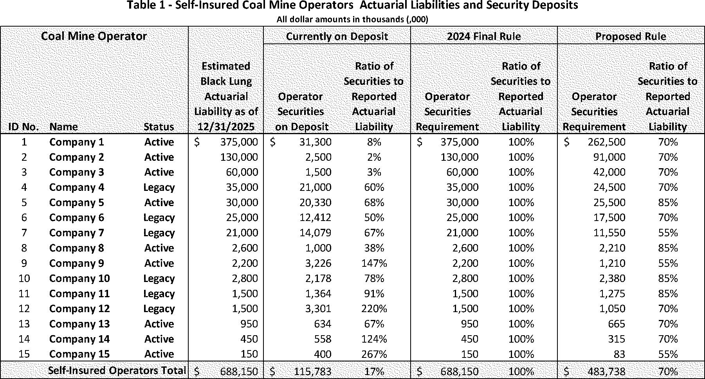
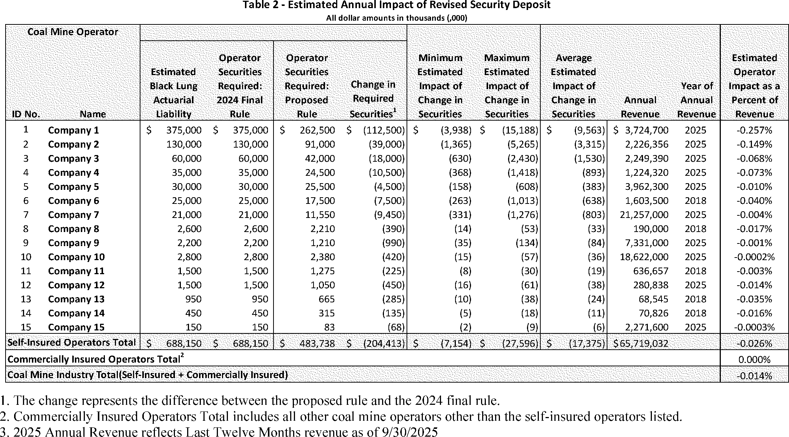

Daily Digest — 2026-07-30
All items below cite the govinfo package (and granule, where applicable) they summarize. Selection is mechanical; each item states the rule that included it. See the Coverage Statement at the end for a full accounting of what was published, what was summarized, and what was excluded and why.
Day in Review
The Congressional Record carried 69 Senate items, 47 House items, 14 Extensions of Remarks, and six Daily Digest entries. Bills numbered H.R. 9977 through 10000 were introduced and referred in the House, addressing tariffs on home building products, firearms transportation, school lunch waivers, and Medicare payments, among other subjects. The Senate took two recorded votes: a motion to discharge S.J. Res. 181, directing removal of US Armed Forces from unauthorized hostilities with Iran, was rejected 49–50, and S. Res. 817 was agreed to 50–47. A unanimous-consent request to pass S. 3101 drew an objection, and military nominations were confirmed en bloc.
The Federal Register published 16 final rules, 12 proposed rules, and 98 notices, alongside 159 agency press releases. Final rules included several FAA airworthiness directives, EPA approvals of New Hampshire and California air program revisions, a Justice Department process for rulemaking petitions, and Postal Service duty-collection standards. Proposals covered Black Lung Act self-insurance, TSCA significant new use rules, and civil penalties for contempt of an immigration judge.
Courts released 20 appellate and 118 district opinions. The Seventh Circuit affirmed that Enbridge Energy trespassed on Bad River Band land by operating Line 5 after its easements expired, remanding on remedies, and held that a person present without inspection is eligible for a bond hearing — a reading the Ninth Circuit also reached. The Eleventh Circuit affirmed dismissal on Suits in Admiralty Act immunity; the Fourth Circuit upheld North Carolina's vape certification law.
Composed from the summarized items below and the day's mechanical counts; all specifics are cited in their sections.
1. Congressional Floor Activity
Military officer nominations confirmed; S. 3101 restricts surrogacy with foreign adversary nationals; S. 5183 establishes anti-corruption bureau; S. 5194 pilots judicial facilities transfer; trade and digital asset bills advanced.
Source: Congressional Record (CREC), daily edition for 2026-07-30. Total issue size: 136 granule(s).
1.1 Senate
In plain terms Military officer nominations confirmed; S. 3101 restricts surrogacy with foreign adversary nationals; S. 5183 establishes anti-corruption bureau; S. 5194 pilots judicial facilities transfer; trade and digital asset bills advanced.
- Unanimous Consent Request--S. 3101 (Executive Session) — Senator Scott sought unanimous consent to pass S. 3101, the SAFE KIDS Act, which would void commercial surrogacy contracts involving nationals of designated foreign adversaries and impose criminal penalties on brokers facilitating such arrangements. Senator Durbin objected, expressing concerns that the bill's scope extends beyond its stated national security purpose and affects reproductive rights and legitimate surrogacy practices.
- In plain terms A senator sought to pass the SAFE KIDS Act voiding commercial surrogacy contracts with nationals of designated foreign adversaries; another senator objected citing concerns about reproductive rights.
- Included because: CREC-SEL-01 — floor item ≥ threshold floor time (15,709 characters)
- Source: CREC-2026-07-30 / CREC-2026-07-30-pt1-PgS4357-2 (opens in a new tab)
- AGOA EXTENSION ACT--Motion to Proceed — Senator Murkowski moved to proceed to H.R. 6500, a bill to extend duty-free treatment under the African Growth and Opportunity Act and extend customs user fees. Senator Lummis discussed the Digital Asset Market Clarity Act, addressing bankruptcy protections and consumer safeguards in digital asset markets following past exchange failures.
- In plain terms A motion to proceed to H.R. 6500 extending duty-free treatment and customs user fees was made; the Digital Asset Market Clarity Act regarding consumer protections was discussed.
- Included because: CREC-SEL-01 — floor item ≥ threshold floor time (41,004 characters)
- Source: CREC-2026-07-30 / CREC-2026-07-30-pt1-PgS4360-3 (opens in a new tab)
- EXECUTIVE CALENDAR (Executive Session) — The Senate considered en bloc and confirmed military officer nominations across the Air Force, Army, Navy, and Space Force to various grades including brigadier general, major general, lieutenant general, rear admiral, and vice admiral.
- In plain terms The Senate confirmed military officer nominations across the Air Force, Army, Navy, and Space Force.
- Included because: CREC-SEL-01 — floor item ≥ threshold floor time (19,015 characters)
- Source: CREC-2026-07-30 / CREC-2026-07-30-pt1-PgS4365-2 (opens in a new tab)
- Statements on Introduced Bills and Joint Resolutions — Senate bill S. 5183 establishes an independent Anti-Corruption Bureau with seven Senate-confirmed commissioners and grants it investigative and enforcement authority over corruption matters. The bill creates a private right of action allowing Americans and state attorneys general to sue to recover money obtained through use of government influence. It includes provisions to limit presidential authority over the Bureau through restrictions on weaponization, defunding, and removal of commissioners.
- In plain terms Senate bill S. 5183 creates an independent Anti-Corruption Bureau with seven Senate-confirmed commissioners empowered to investigate corruption; allows Americans and state attorneys general to sue to recover money obtained through government influence.
- Included because: CREC-SEL-01 — floor item ≥ threshold floor time (204,394 characters)
- Source: CREC-2026-07-30 / CREC-2026-07-30-pt1-PgS4371 (opens in a new tab)
- Introductory Statement on S. 5183 — Senate bill S. 5183 establishes an independent Anti-Corruption Bureau with seven Senate-confirmed commissioners and grants it investigative and enforcement authority over corruption matters. The bill creates a private right of action allowing Americans and state attorneys general to sue to recover money obtained through use of government influence. It includes provisions to limit presidential authority over the Bureau through restrictions on weaponization, defunding, and removal of commissioners.
- In plain terms Senate bill S. 5183 creates an independent Anti-Corruption Bureau with seven Senate-confirmed commissioners empowered to investigate corruption; allows Americans and state attorneys general to sue to recover money obtained through government influence.
- Included because: CREC-SEL-01 — floor item ≥ threshold floor time (150,163 characters)
- Source: CREC-2026-07-30 / CREC-2026-07-30-pt1-PgS4371-2 (opens in a new tab)
- Introductory Statement on S. 5194 — Senate bill S. 5194 authorizes a pilot program transferring management of judicial facilities in up to 10 judicial districts from the General Services Administration to the Director of the Administrative Office of the United States Courts. The Director is empowered to acquire, construct, alter, and lease court accommodations within covered districts and to manage the Thurgood Marshall Federal Judiciary Building.
- In plain terms Senate bill S. 5194 authorizes a pilot program transferring management of judicial facilities from GSA to the court system's Director in up to ten judicial districts.
- Included because: CREC-SEL-01 — floor item ≥ threshold floor time (50,440 characters)
- Source: CREC-2026-07-30 / CREC-2026-07-30-pt1-PgS4385 (opens in a new tab)
- Text of Amendments — Three Senate amendments were submitted. SA 6720 adds a provision terminating duty rates on imported goods when countries no longer meet specified criteria. SA 6721, titled the REPO for Ukrainians Implementation Act of 2026, modifies existing law to authorize transfer of Russian sovereign assets into an interest-bearing Ukraine Support Fund, requires quarterly obligations of at least $250 million for Ukraine assistance, and directs diplomatic engagement with G7, EU, and Australia members to repurpose frozen Russian assets. SA 6722 addresses seizure and forfeiture of assets of Russian individuals.
- In plain terms Three amendments were submitted: one terminating import duty rates under certain conditions; one establishing a Ukraine Support Fund requiring quarterly $250 million obligations; one addressing seizure of Russian individuals' assets.
- Included because: CREC-SEL-01 — floor item ≥ threshold floor time (46,477 characters)
- Source: CREC-2026-07-30 / CREC-2026-07-30-pt1-PgS4394 (opens in a new tab)
- Confirmations — The Senate confirmed military officer nominations on July 30, 2026, including 17 Air Force brigadier generals, 1 Air Force lieutenant general, 15 Air Force major generals, 1 vice admiral and 20 Navy rear admirals, 7 Army lieutenant generals, and 3 Space Force major generals. The Senate also confirmed previously-received Air Force, Army, and Navy nominations by batch, with specified exclusions noted in some groups.
- In plain terms The Senate confirmed military officer nominations on July 30, 2026, including Air Force brigadier and major generals, Navy rear admirals, Army lieutenant generals, and Space Force major generals.
- Included because: CREC-SEL-01 — floor item ≥ threshold floor time (17,925 characters)
- Source: CREC-2026-07-30 / CREC-2026-07-30-pt1-PgS4399 (opens in a new tab)
1.2 House of Representatives
In plain terms 24 bills (H.R. 9977–10000) introduced covering home building tariffs, homeowner insurance tax deductions, firearms transportation, and school lunch.
- Public Bills and Resolutions — Twenty-four bills (H.R. 9977–10000) were introduced in the House and referred to appropriate committees, addressing topics including tariffs on home building products, tax deductions for homeowners insurance, firearms transportation, school lunch program waivers, CDC staffing, sanctions against the Polisario Front, domestic violence and firearm possession, Medicare payments for radiologist assistants, election campaign misrepresentation through artificial intelligence, prison library studies, recycling infrastructure databases, food allergen labeling, federal employee conflict-of-interest requirements, disaster relief coordination, child care accessibility, child protective services and poverty, forced arbitration in employment disputes, newborn health coverage, workforce integration, fire science research coordination, and mountain pine beetle response programs.
- In plain terms The House introduced 24 bills on topics including tariffs, tax deductions, firearms, school lunch programs, CDC staffing, domestic violence, Medicare payments, artificial intelligence misuse, recycling infrastructure, food allergen labeling, federal ethics, and child care.
- Included because: CREC-SEL-01 — floor item ≥ threshold floor time (19,006 characters)
- Source: CREC-2026-07-30 / CREC-2026-07-30-pt1-PgH5206 (opens in a new tab)
1.3 Recorded Votes
- Directing the Removal of United States Armed Forces from Hostilities within or against the Islamic Republic of Iran Tha… — Senator Gillibrand moved to discharge S.J. Res. 181, a joint resolution directing removal of US Armed Forces from unauthorized hostilities with Iran, from the Committee on Foreign Relations; the motion to discharge was rejected 49–50. Senator Schumer spoke in support of the resolution, noting polling data showing limited public support for continued military conflict.
- In plain terms A motion to bring to a vote a resolution directing removal of US Armed Forces from hostilities with Iran failed 49–50 in the Senate.
- Included because: CREC-SEL-02 — recorded vote (all recorded votes are listed)
- Source: CREC-2026-07-30 / CREC-2026-07-30-pt1-PgS4356 (opens in a new tab)
- Vote on S. Res. 817 (Executive Session) — S. Res. 817, an executive resolution, was agreed to by a vote of 50–47.
- In plain terms The Senate agreed to Senate Resolution 817 by a vote of 50–47.
- Included because: CREC-SEL-02 — recorded vote (all recorded votes are listed)
- Source: CREC-2026-07-30 / CREC-2026-07-30-pt1-PgS4360 (opens in a new tab)
2. Legislation
Source: Congressional Bills (BILLS), text versions published 2026-07-30 to 2026-07-30.
2.1 Counts by Stage
| Stage (bill text version) | Count |
|---|---|
| Introduced (ih/is) | 17 |
| Reported (rh/rs) | 0 |
| Engrossed (eh/es) | 0 |
| Enrolled (enr) | 0 |
| Other versions | 0 |
| Total bill texts published | 17 |
2.2 Bills Listed by Mechanical Rule
Bills below are listed because they matched at least one listing rule; the matching rule is stated per item. All other bill texts are counted above and accounted for in the Coverage Statement.
No bill texts published in this range matched a listing rule; all 17 are accounted for in the Coverage Statement.
3. Federal Register
16 rules finalized: 10 FAA airworthiness directives (helicopter/jet/glider maintenance), 2 EPA air quality programs, postal customs procedures, GSA nondiscrimination, DOJ petition procedures, and CMS Medicare face-to-face requirements.
Source: Federal Register (FR), issue of 2026-07-30.
3.1 Counts by Document Type
| Document type | Count |
|---|---|
| Rules | 16 |
| Proposed rules | 12 |
| Notices | 98 |
| Presidential documents | 0 |
| Total FR documents | 126 |
3.2 Rules Published
In plain terms 16 rules finalized: 10 FAA airworthiness directives (helicopter/jet/glider maintenance), 2 EPA air quality programs, postal customs procedures, GSA nondiscrimination, DOJ petition procedures, and CMS Medicare face-to-face requirements.
DEPARTMENT OF HEALTH AND HUMAN SERVICES
- Medicare Program; Updates to the Master List of Items Potentially Subject to Face-to-Face Encounter and Written Order Prior to Delivery and/or Prior Authorization Requirements; Updates to the Required Face-to-Face Encounter and Written Order Prior to Delivery List; and Updates to the Required Prior Authorization List (2026-15446; 42 CFR Parts 410 and 414) — This document announces updates to the Healthcare Common Procedure Coding System (HCPCS) codes on the Master List. It also announces updates to the HCPCS codes on the Required Face-to-Face Encounter and Written Order Prior to Delivery List and the Required Prior Authorization List. Action: Updates to the Master List of Items Potentially Subject to Face-To-Face Encounter and Written Order Prior to Delivery and/or Prior Authorization Requirements (the “Master List”); Updates to the Required Face-to-Face Encounter and Written Order Prior to Delivery List; and Updates to the Required Prior Authorization List. Dates: Implementation of updates to the Master List, the Required Face-to-Face Encounter and Written Order Prior to Delivery List, and the Required Prior Authorization List, excluding upper limb orthoses, are effective October 28, 2026. Prior authorization requirements for the upper limb orthoses will be implemented in three phases. Phase one includes New York, Michigan, Florida, and California and is effective October 28, 2026. Phase two includes the States in phase one and Pennsylvania, Massachusetts, Ohio, Illinois, Texas, Georgia, Arizona, and Oregon and is effective January 26, 2027. Phase three includes all States and territories not included in phases one and two and is effective April 26, 2027.
- In plain terms The document updates medical billing codes for Medicare face-to-face encounters, written orders before delivery, and prior authorization requirements.
- Included because: FR-SEL-01 — document type: final rule (all listed)
- Source: FR-2026-07-30 / 2026-15446 (opens in a new tab)
DEPARTMENT OF JUSTICE
- Procedures for Submission and Consideration of Petitions for Rulemaking (2026-15434; 28 CFR Part 50) — Pursuant to the Administrative Procedure Act, the Department of Justice (“the Department”) is adopting a process for considering petitions submitted by interested persons requesting that the Department issue, amend, or repeal a rule. Action: Interim final rule; request for comments. Dates: Effective date: This rule is effective July 31, 2026. Comments: Comments are due on or before September 29, 2026.
- In plain terms The Department of Justice establishes a process for the public to petition the agency to issue, change, or repeal rules.
- Included because: FR-SEL-01 — document type: final rule (all listed)
- Source: FR-2026-07-30 / 2026-15434 (opens in a new tab)
DEPARTMENT OF TRANSPORTATION
- Airworthiness Directives; Bell Textron Canada Limited Helicopters (2026-15365; 14 CFR Part 39) — The FAA is superseding Airworthiness Directive (AD) 2024-02-55, which applies to certain Bell Textron Canada Limited (BTCL) Model 505 helicopters. AD 2024-02-55 required initial and recurring inspections of the vertical stabilizer top end cap assembly and corrective action if a crack is found. Since the FAA issued AD 2024-02-55, the manufacturer introduced a new one- piece vertical stabilizer machined top end cap assembly, which is implemented during production, and designed a new replacement for the vertical stabilizer machined top end cap assembly currently in service. This AD continues to require the inspection requirements of AD 2024-02-55 and would limit the applicability to exclude certain serial numbered BTCL Model 505 helicopters with an improved design vertical stabilizer top end cap installed at production. This AD also requires replacing the vertical stabilizer top end cap assembly with an improved design top end cap assembly, which constitutes a terminating action for the recurring detailed visual inspections. The FAA is issuing this AD to address the unsafe condition on these products. Action: Final rule. Dates: This AD is effective September 3, 2026. The Director of the Federal Register approved the incorporation by reference of a certain publication listed in this AD as of September 3, 2026.
- In plain terms The FAA updates inspection requirements for certain Bell helicopters' vertical stabilizer components and excludes aircraft with improved designs already installed.
- Included because: FR-SEL-01 — document type: final rule (all listed)
- Source: FR-2026-07-30 / 2026-15365 (opens in a new tab)
- Airworthiness Directives; Safran Helicopter Engines, S.A. (Type Certificate Previously Held by Turbomeca, S.A.) Engines (2026-15369; 14 CFR Part 39) — The FAA is adopting a new airworthiness directive (AD) for all Safran Helicopter Engines, S.A. (Safran) Model Arriel 2E engines. This AD was prompted by the determination that new or more restrictive airworthiness limitations are necessary. This AD requires revising the existing maintenance or inspection program to incorporate the airworthiness limitations section (ALS) of the existing approved aircraft maintenance program (AMP), as applicable. The FAA is issuing this AD to address the unsafe condition on these products. Action: Final rule. Dates: This AD is effective September 3, 2026. The Director of the Federal Register approved the incorporation by reference of a certain publication listed in this AD as of September 3, 2026.
- In plain terms The FAA requires operators of certain Safran helicopter engines to update their maintenance programs with new safety requirements.
- Included because: FR-SEL-01 — document type: final rule (all listed)
- Source: FR-2026-07-30 / 2026-15369 (opens in a new tab)
- Airworthiness Directives; Leonardo S.p.a. Helicopters (2026-15370; 14 CFR Part 39) — The FAA is adopting a new airworthiness directive (AD) for all Leonardo S.p.a. Model AW189 helicopters. This AD was prompted by reports of cracking on the ejector ducts. This AD requires repetitively inspecting the left-hand (LH) side and right-hand (RH) side ejector ducts, including the exhaust bracket reinforcements and reinforcement plates, and, depending on the results, replacing any affected ejector duct. The FAA is issuing this AD to address the unsafe condition on these products. Action: Final rule. Dates: This AD is effective September 3, 2026. The Director of the Federal Register approved the incorporation by reference of a certain publication listed in this AD as of September 3, 2026.
- In plain terms The FAA requires repetitive inspections of ejector ducts on certain Leonardo helicopters and replacement if damage is found.
- Included because: FR-SEL-01 — document type: final rule (all listed)
- Source: FR-2026-07-30 / 2026-15370 (opens in a new tab)
- Airworthiness Directives; Bombardier, Inc., Airplanes (2026-15409; 14 CFR Part 39) — The FAA is adopting a new airworthiness directive (AD) for certain Bombardier, Inc. Model BD-700-1A10 and BD-700-1A11 airplanes. This AD was prompted by an in-service event where a main landing gear tire burst upon landing. This AD requires an inspection to determine if an affected brake control unit (BCU) is installed and replacement of affected BCUs. This AD also prohibits the installation of affected parts. The FAA is issuing this AD to address the unsafe condition on these products. Action: Final rule. Dates: This AD is effective September 3, 2026. The Director of the Federal Register approved the incorporation by reference of a certain publication listed in this AD as of September 3, 2026.
- In plain terms The FAA requires inspection of brake units on certain Bombardier business jets after a landing gear tire burst and replacement if needed.
- Included because: FR-SEL-01 — document type: final rule (all listed)
- Source: FR-2026-07-30 / 2026-15409 (opens in a new tab)
- Airworthiness Directives; Airbus SAS Airplanes (2026-15410; 14 CFR Part 39) — The FAA is adopting a new airworthiness directive (AD) for all Airbus SAS Model A330-841 and Model A330-941 airplanes. This AD was prompted by reports of crack findings on the sloping rib. This AD requires a repetitive inspection of the external surface of each sloping rib and each slat 1 inboard seal, and applicable corrective actions. The FAA is issuing this AD to address the unsafe condition on these products. Action: Final rule. Dates: This AD is effective September 3, 2026. The Director of the Federal Register approved the incorporation by reference of a certain publication listed in this AD as of September 3, 2026.
- In plain terms The FAA requires repetitive inspections of aircraft parts on certain Airbus models and corrective action if cracks are found.
- Included because: FR-SEL-01 — document type: final rule (all listed)
- Source: FR-2026-07-30 / 2026-15410 (opens in a new tab)
- Airworthiness Directives; Airbus Canada Limited Partnership (Type Certificate Previously Held by C Series Aircraft Limited Partnership (CSALP); Bombardier, Inc.) Airplanes (2026-15411; 14 CFR Part 39) — The FAA is superseding Airworthiness Directive (AD) 2025-06-01, which applied to all Airbus Canada Limited Partnership Model BD-500-1A10 and BD-500-1A11 airplanes. AD 2025-06-01 required revising the existing airplane flight manual (AFM) to incorporate the procedures for the flightcrew to manually isolate the opposite functional engine in the event of an engine bleed duct large leak condition. Since the FAA issued AD 2025-06-01, an electronic engine control (EEC) software update has been developed to address the unsafe condition. This AD continues to require the actions in AD 2025-06-01 and requires installing a certain EEC software update on both engines. This AD also removes airplanes from the applicability. The FAA is issuing this AD to address the unsafe condition on these products. Action: Final rule. Dates: This AD is effective September 3, 2026. The Director of the Federal Register approved the incorporation by reference of a certain publication listed in this AD as of September 3, 2026.
- In plain terms The FAA requires certain Airbus aircraft to install an electronic engine control software update for engine bleed leak procedures.
- Included because: FR-SEL-01 — document type: final rule (all listed)
- Source: FR-2026-07-30 / 2026-15411 (opens in a new tab)
- Airworthiness Directives; MHI RJ Aviation ULC (Type Certificate Previously Held by Bombardier, Inc.) Airplanes (2026-15412; 14 CFR Part 39) — The FAA is adopting a new airworthiness directive (AD) for all MHI RJ Aviation ULC Model CL-600-2C10 (Regional Jet Series 700, 701 & 702), CL-600-2C11 (Regional Jet Series 550), CL-600-2D15 (Regional Jet Series 705), and CL-600-2D24 (Regional Jet Series 900) airplanes. This AD was prompted by a determination that new or more restrictive airworthiness limitations are necessary. This AD requires revising the existing maintenance or inspection program, as applicable, to incorporate new or more restrictive airworthiness limitations. The FAA is issuing this AD to address the unsafe condition on these products. Action: Final rule. Dates: This AD is effective September 3, 2026. The Director of the Federal Register approved the incorporation by reference of a certain publication listed in this AD as of September 3, 2026.
- In plain terms The FAA requires operators of certain regional jets to update their maintenance programs with new and stricter safety requirements.
- Included because: FR-SEL-01 — document type: final rule (all listed)
- Source: FR-2026-07-30 / 2026-15412 (opens in a new tab)
- Airworthiness Directives; Airbus SAS Airplanes (2026-15455; 14 CFR Part 39) — The FAA is adopting a new airworthiness directive (AD) for certain Airbus SAS Model A330-200 and A330-300 series airplanes modified by a certain supplemental type certificate (STC). This AD was prompted by a finding that, for airplanes with a flightcrew oxygen system supplied by a single oxygen cylinder, the oxygen supply would not be sufficient under all circumstances for extended operations (ETOPS) with a maximum diversion time of 180 minutes (ETOPS-180) with four flightcrew members. This AD requires revising the existing Airplane Flight Manual Supplement (AFM-S) to limit ETOPS-180 operations to three flightcrew members, as applicable, and correct minimum oxygen dispatch pressure information. The FAA is issuing this AD to address the unsafe condition on these products. Action: Final rule. Dates: This AD is effective September 3, 2026. The Director of the Federal Register approved the incorporation by reference of a certain publication listed in this AD as of September 3, 2026.
- In plain terms The FAA requires certain modified Airbus aircraft to limit extended-range operations to three flightcrew members due to insufficient oxygen for four.
- Included because: FR-SEL-01 — document type: final rule (all listed)
- Source: FR-2026-07-30 / 2026-15455 (opens in a new tab)
- Airworthiness Directives; Stemme GmbH Gliders (2026-15466; 14 CFR Part 39) — The FAA is adopting a new airworthiness directive (AD) for all Stemme GmbH (Stemme) Model Stemme S 12 gliders. This AD was prompted by reports of fuel leaking around certain copper sealing rings within the fuel system. This AD requires repetitive visual checks of the fuel system for fuel leakage, and replacement of the affected copper sealing ring. This AD also prohibits the installation of affected parts. The FAA is issuing this AD to address the unsafe condition on these products. Action: Final rule. Dates: This AD is effective September 3, 2026. The Director of the Federal Register approved the incorporation by reference of a certain publication listed in this AD as of September 3, 2026.
- In plain terms Owners of Stemme S 12 gliders must regularly inspect fuel systems for leaks and replace certain copper sealing rings to prevent fuel leakage.
- Included because: FR-SEL-01 — document type: final rule (all listed)
- Source: FR-2026-07-30 / 2026-15466 (opens in a new tab)
- Airworthiness Directives; Pilatus Aircraft Ltd. Airplanes (2026-15467; 14 CFR Part 39) — The FAA is adopting a new airworthiness directive (AD) for certain Pilatus Aircraft Ltd. (Pilatus) Model PC-12/47E airplanes. This AD was prompted by a report that, during an engine start on the ground, the airplane battery voltage dropped to a value that resulted in an avionic system shutdown. This AD requires incorporating a temporary revision (TR) into the existing pilot's operating handbook (POH) for the affected airplanes to provide operators with instructions for an enhanced engine start procedure. The FAA is issuing this AD to address the unsafe condition on these products. Action: Final rule. Dates: This AD is effective September 3, 2026. The Director of the Federal Register approved the incorporation by reference of a certain publication listed in this AD as of September 3, 2026.
- In plain terms Pilatus PC-12/47E airplane operating manuals must include an enhanced engine start procedure to prevent aircraft electronic systems from shutting down.
- Included because: FR-SEL-01 — document type: final rule (all listed)
- Source: FR-2026-07-30 / 2026-15467 (opens in a new tab)
ENVIRONMENTAL PROTECTION AGENCY
- Operating Permit Program Approval; New Hampshire; Revised Definitions (2026-15363; 40 CFR Part 70) — The Environmental Protection Agency (EPA) approves revisions to the State of New Hampshire's Clean Air Act (CAA) title V operating permit program. These revisions amend the definitions of “hazardous air pollutant” and “regulated air pollutant” in New Hampshire regulations to remain consistent with Federal permitting and air toxics requirements in accordance with the CAA. Action: Final rule. Dates: This rule is effective on August 31, 2026.
- In plain terms The EPA approves New Hampshire's updates to air permit definitions to align with federal air quality and toxics requirements.
- Included because: FR-SEL-01 — document type: final rule (all listed)
- Source: FR-2026-07-30 / 2026-15363 (opens in a new tab)
- Air Plan Approval; California; San Joaquin Valley Air Pollution Control District (2026-15377; 40 CFR Part 52) — The Environmental Protection Agency (EPA) is taking final action to approve a revision to the San Joaquin Valley Air Pollution Control District (SJVAPCD or “District”) portion of the California State Implementation Plan (SIP) concerning two rules submitted to address section 185 of the Clean Air Act (CAA or the “Act”) with respect to the 2008 and 2015 8-hour ozone National Ambient Air Quality Standards (NAAQS or “standards”). Action: Final rule. Dates: This rule is effective August 31, 2026.
- In plain terms The EPA approves air quality rules by the San Joaquin Valley Air Pollution Control District regarding ozone standards.
- Included because: FR-SEL-01 — document type: final rule (all listed)
- Source: FR-2026-07-30 / 2026-15377 (opens in a new tab)
GENERAL SERVICES ADMINISTRATION
- General Services Administration Property Management Regulation (GSPMR); Nondiscrimination on the Basis of the Age Act Regulation for Programs or Activities Receiving Federal Financial Assistance; Technical Amendment (2026-15368; 41 CFR Parts 101-8 and 105-9) — The General Services Administration (GSA) is publishing a technical amendment to effectuate the rule published March 6, 2026. That published rule required clarifying edits in the amendatory instructions in order to facilitate the removal of GSA's regulations from the government-wide Federal Property Management Regulation (FPMR) and the addition of those regulations into the General Services Administration Property Management Regulations (GSPMR). Action: Technical amendment. Dates: This technical amendment is effective July 30, 2026. The subject GSPMR case continues to be effective March 6, 2026.
- In plain terms The General Services Administration makes clarifying changes to transfer its property management regulations from government-wide to agency-specific rules.
- Included because: FR-SEL-01 — document type: final rule (all listed)
- Source: FR-2026-07-30 / 2026-15368 (opens in a new tab)
POSTAL SERVICE
- Duty Collection for Domestic Mail Arriving From Certain Insular Possessions and Territories (2026-15420; 39 CFR Part 111) — The Postal Service is revising Mailing Standards of the United States Postal Service, Domestic Mail Manual (DMM®), section 608, to provide instructions for customs clearance and the prepayment of applicable customs duties, taxes, and fees for certain goods mailed from American Samoa, Guam, Northern Mariana Islands, and U.S. Virgin Islands destined to the customs territory of the United States (CTUS), which is defined in 19 Code of Federal Regulations (CFR) 101.1 as the fifty States, the District of Columbia, and Puerto Rico. Action: Interim final rule. Dates: Effective: July 30, 2026. Comments must be received by August 31, 2026.
- In plain terms The Postal Service updates customs duty collection instructions for mail from U.S. territories destined to the mainland and Puerto Rico.
- Included because: FR-SEL-01 — document type: final rule (all listed)
- Source: FR-2026-07-30 / 2026-15420 (opens in a new tab)
3.3 Proposed Rules Published
In plain terms 12 proposed rules including Black Lung self-insurer authorization, EEO reporting rescission, chemical SNURs, air quality approvals (CA/MO/PA), helicopter/space licensing, NPS bicycling, Exchange Visitor program, and immigration judge penalties.
DEPARTMENT OF HEALTH AND HUMAN SERVICES
- Administrative Costs for Children in Title IV-E Foster Care (2026-15403; 45 CFR Part 1356) — This document withdraws a proposed rule that was published in the Federal Register on January 31, 2005. The proposed rule would have amended the regulations for Child and Family Services with respect to title IV-E administrative costs and eligibility determinations and re-determinations for title IV-E foster care recipients and foster care “candidates” to implement title IV-E foster care eligibility and administrative cost provisions in sections 472 and 474 of the Social Security Act (the Act) and incorporates previously issued policy guidance. Action: Proposed rule; withdrawal. Dates: The proposed rule published January 31, 2005 (70 FR 4803) is withdrawn, effective July 30, 2026.
- In plain terms The agency withdraws a proposed rule from 2005 concerning federal foster care administrative costs and children's eligibility determination procedures.
- Included because: FR-SEL-02 — document type: proposed rule (all listed)
- Source: FR-2026-07-30 / 2026-15403 (opens in a new tab)
DEPARTMENT OF JUSTICE
- Civil Money Penalty for Actions in Contempt of an Immigration Judge's Proper Exercise of Authority (2026-15458; 8 CFR Parts 1003 and 1103) — This notice of proposed rulemaking (“NPRM”) would implement a provision of the Immigration and Nationality Act (“INA” or “the Act”) that authorizes Immigration Judges, under regulations prescribed by the Attorney General, to sanction by civil money penalty any action (or inaction) in contempt of the proper exercise of their authority by certain individuals. The rule would: define the scope of the contempt authority; provide procedures for contempt findings, penalty determinations, and penalty payment; establish an appellate process; and implement oversight of the use of contempt authority. The rule would also make conforming changes to the grounds for practitioner discipline. Action: Notice of proposed rulemaking. Dates: Electronic comments must be submitted on or before September 28, 2026. The electronic Federal Docket Management System at https://www.regulations.gov will accept electronic comments until 11:59 p.m. Eastern Time on that date.
- In plain terms This proposed rule would authorize immigration judges to impose monetary fines on people for disobeying their court orders and establish procedures for penalties, appeals, and oversight.
- Included because: FR-SEL-02 — document type: proposed rule (all listed)
- Source: FR-2026-07-30 / 2026-15458 (opens in a new tab)
DEPARTMENT OF LABOR
- Black Lung Benefits Act: Authorization of Self-Insurers (2026-15325; 20 CFR Part 726) — The Department is proposing revisions to regulations under the Black Lung Benefits Act (BLBA or the Act) governing authorization of self-insurers. These rules will determine the process for coal mine operators to apply for authorization to self-insure, the requirements operators must meet to qualify to self-insure, the amount of security self-insured operators must provide, and the types of security accepted for operators to self-insure. Action: Notice of proposed rulemaking; request for comments. Dates: The Department invites written comments on the proposed regulations from interested parties. Written comments must be received by September 28, 2026.
- In plain terms The Department proposes new rules for how coal operators apply to self-insure, including eligibility requirements and types of security deposits they must provide.
- Included because: FR-SEL-02 — document type: proposed rule (all listed)
- Source: FR-2026-07-30 / 2026-15325 (opens in a new tab)

Source graphic 1 of 5 from 2026-15325.
Source graphic 2 of 5 from 2026-15325.- Graphics not rendered here: 3 of 5 — see the source PDF (opens in a new tab).
DEPARTMENT OF STATE
- Exchange Visitor Program—Termination of Program Participation, Extension of Program and Reinstatement to Valid Program Status (2026-15450; 22 CFR Part 62) — The Department of State's (Department's) Bureau of Educational and Cultural Affairs administers the Exchange Visitor Program, as set forth at 22 CFR part 62, wherein exchange visitors on educational and cultural exchange programs travel to the United States in the J visa category. The Department tracks the status and geographic location of exchange visitors through the Student and Exchange Visitor Information System (SEVIS), a database administered by the Department of Homeland Security. This Notice of Proposed Rulemaking (Proposed Rule) seeks to clarify the conditions under which a sponsor must terminate an exchange visitor's program and authorizes the Department, in its discretion, to terminate an exchange visitor's program in limited circumstances; modifies Extension of Program and Reinstatement to valid program status in their entirety by eliminating outdated requirements and introducing updated procedures that make use of current SEVIS functionality; amends Definitions to include definitions for “Unauthorized Employment” and “Valid Program Status”; and rescinds the separate extension of program provision for au pairs. Action: Proposed rule with request for comment. Dates: The Department of State will accept comments from the public for 60 days from July 30, 2026.
- In plain terms The State Department proposes clarifying when exchange visitor sponsors must terminate participants and updating reinstatement procedures using current system capabilities.
- Included because: FR-SEL-02 — document type: proposed rule (all listed)
- Source: FR-2026-07-30 / 2026-15450 (opens in a new tab)
DEPARTMENT OF THE INTERIOR
- First State National Historical Park; Bicycling (2026-15406; 36 CFR Part 7) — The National Park Service (NPS) proposes to issue special regulations for First State National Historical Park to allow for bicycle use on approximately 25 miles of trails within the Brandywine Valley unit of the park. Action: Proposed rule. Dates: Comments on the proposed rule must be received by 11:59 p.m. EDT on September 28, 2026.
- In plain terms The National Park Service proposes allowing bicycling on approximately 25 miles of trails in the Brandywine Valley area of the park.
- Included because: FR-SEL-02 — document type: proposed rule (all listed)
- Source: FR-2026-07-30 / 2026-15406 (opens in a new tab)
DEPARTMENT OF TRANSPORTATION
- Airworthiness Directives; Airbus Helicopters Deutschland GmbH (AHD) Helicopters (2026-15374; 14 CFR Part 39) — The FAA proposes to supersede Airworthiness Directive (AD) 2024-04-10, which applies to all Airbus Helicopters Deutschland GmbH (AHD) Model EC135P1, EC135P2, EC135P2+, EC135P3, EC135T1, EC135T2, EC135T2+, EC135T3, and EC635T2+ helicopters. AD 2024-04-10 requires repetitively inspecting certain part-numbered tail rotor (T/R) blades for a crack and, depending on the results, removing any cracked T/R blade from service. AD 2024-04-10 also prohibits installing certain T/R blades on any helicopter unless certain requirements are met. Since AD 2024-04-10 was issued, it was determined that inspection Method A should be discontinued and that additional limitations shall be provided. This proposed AD would retain the actions of AD 2024-04-10 and would require repetitively inspecting a certain tail rotor blade (TRB) assembly for cracks and, depending on the results, removing any cracked TRB assembly from service and replacing an affected part as terminating action for the repetitive inspections. This proposed AD would also prohibit installing an affected TRB assembly on any helicopter unless certain requirements are met. [official summary truncated; see source] Action: Notice of proposed rulemaking (NPRM). Dates: The FAA must receive comments on this NPRM by September 14, 2026.
- In plain terms The FAA proposes updating inspection requirements for tail rotor blades on certain Airbus helicopters and discontinuing a prior inspection method.
- Included because: FR-SEL-02 — document type: proposed rule (all listed)
- Source: FR-2026-07-30 / 2026-15374 (opens in a new tab)
- Waiver of Specified Statutory Requirements for Commercial Space Launch and Reentry Actions (2026-15415; 14 CFR Parts 400, 420, 433, 437, 450) — FAA proposes to amend its commercial space licensing regulations to streamline the licensing process and reduce regulatory burden for applicants. Specifically, FAA proposes to invoke the Secretary of Transportation's statutory authority to waive requirements of laws of the U.S. for a license or permit, after consultation with the head of the appropriate executive agency, when the requirement is not necessary to protect the public health and safety, safety of property, and national security and foreign policy interests of the United States. FAA proposes waiving requirements under 13 laws for commercial space licenses and permits to operate a launch site, licenses to operate a reentry site, experimental permits, and licenses to operate a launch or reentry vehicle. Action: Notice of proposed rulemaking (NPRM). Dates: Send comments on or before August 31, 2026.
- In plain terms The FAA proposes waiving certain legal requirements for commercial space launch and reentry licenses to streamline the licensing process.
- Included because: FR-SEL-02 — document type: proposed rule (all listed)
- Source: FR-2026-07-30 / 2026-15415 (opens in a new tab)
ENVIRONMENTAL PROTECTION AGENCY
- Significant New Use Rules on Certain Chemical Substances (26-4) (2026-15352; 40 CFR Part 721) — EPA is proposing significant new use rules (SNURs) under the Toxic Substances Control Act (TSCA) for certain chemical substances that were the subject of premanufacture notices (PMNs) and are also subject to an Order issued by EPA pursuant to TSCA. Once finalized, the SNURs would require persons who intend to manufacture (defined by statute to include import) or process any of these chemical substances for an activity that is proposed as a significant new use by this rulemaking to notify EPA at least 90 days before commencing that activity. The required notification initiates EPA's evaluation of the conditions of that use for that chemical substance. In addition, the manufacture or processing for the significant new use may not commence until EPA has conducted a review of the required notification, made an appropriate determination regarding that notification, and taken such actions as required by that determination. Action: Proposed rule. Dates: Comments must be received on or before August 31, 2026.
- In plain terms The EPA proposes rules requiring manufacturers to notify the agency 90 days before manufacturing certain chemicals for new uses and obtain EPA approval before proceeding.
- Included because: FR-SEL-02 — document type: proposed rule (all listed)
- Source: FR-2026-07-30 / 2026-15352 (opens in a new tab)
- Clean Air Act Operating Permit Program Revisions; California; Amador County Air Pollution Control District, Calaveras County Air Pollution Control District, Great Basin Unified Air Pollution Control District, Northern Sierra Air Quality Management District (2026-15362; 40 CFR Part 70) — The Environmental Protection Agency (EPA) is proposing to approve revisions to four State of California air districts' Clean Air Act title V program rules to remove emergency affirmative defense provisions. The four districts are the Amador County Air Pollution Control District (ACAPCD), the Calaveras County Air Pollution Control District (CCAPCD), the Great Basin Unified Air Pollution Control District (GBUAPCD), and the Northern Sierra Air Quality Management District (NSAQMD) (“Districts”). This proposed action is being taken in accordance with Federal regulations and the Clean Air Act (CAA or “Act”). We are taking comments on these proposed revisions and plan to follow with a final action. Action: Proposed rule. Dates: Written comments must be received on or before August 31, 2026.
- In plain terms The EPA proposes approving rule changes by four California air districts that remove emergency defense provisions from air permits.
- Included because: FR-SEL-02 — document type: proposed rule (all listed)
- Source: FR-2026-07-30 / 2026-15362 (opens in a new tab)
- Air Plan Approval; Missouri; Construction Permit Exemptions (2026-15371; 40 CFR Part 52) — The Environmental Protection Agency (EPA) is proposing to approve revisions to the Missouri State Implementation Plan (SIP) received on February 10, 2026. The submission revises Missouri's regulation on construction permit exemptions in their Minor New Source Review (NSR) program. These revisions refine exemptions for emergency generators, update references to other rules, and update recordkeeping requirements. The EPA is proposing to approve this rule revision pursuant to the Clean Air Act (CAA). Action: Proposed rule. Dates: Comments must be received on or before August 31, 2026.
- In plain terms The EPA proposes approving Missouri's updates to air quality permit exemptions for emergency generators and recordkeeping requirements.
- Included because: FR-SEL-02 — document type: proposed rule (all listed)
- Source: FR-2026-07-30 / 2026-15371 (opens in a new tab)
- Air Plan Approval; Pennsylvania; Redesignation of the Warren County Nonattainment Area to Attainment and Approval of the Area's Maintenance Plan for the 2010 1-Hour Primary Sulfur Dioxide National Ambient Air Quality Standard (2026-15372; 40 CFR Parts 52 and 81) — The Environmental Protection Agency (EPA) is proposing to approve a state implementation plan (SIP) revision and redesignation request submitted on September 19, 2025 by the Pennsylvania Department of Environmental Protection (PADEP). The SIP revision asks the EPA to redesignate the Warren County, Pennsylvania area from nonattainment to attainment for the 2010 1-hour primary sulfur dioxide (SO 2 ) national ambient air quality standard (NAAQS). The revision also asks the EPA to approve into the SIP the Commonwealth's maintenance plan for the 2010 1-hour primary SO 2 NAAQS for the Warren County area. Furthermore, Pennsylvania requests that the EPA correct source-specific requirements for United Refining Company within the Pennsylvania SIP that were previously included in error. This proposed action is being taken under the Clean Air Act (CAA). Action: Proposed rule. Dates: Written comments must be received on or before August 31, 2026.
- In plain terms The EPA proposes approving Pennsylvania's redesignation of Warren County as meeting sulfur dioxide air quality standards and its maintenance plan.
- Included because: FR-SEL-02 — document type: proposed rule (all listed)
- Source: FR-2026-07-30 / 2026-15372 (opens in a new tab)
EQUAL EMPLOYMENT OPPORTUNITY COMMISSION
- Removal of Reporting Requirements; Public Hearing (2026-15340; 29 CFR Part 1602) — The Equal Employment Opportunity Commission has scheduled a public hearing to gather information and hear public comment on its proposed rulemaking—Rescission of EEO Reports (EEO-1, EEO-2, EEO-3, EEO-4, EEO-5, EEO-6) and related recordkeeping and record preservation requirements. Action: Proposed rule; public hearing. Dates: Tuesday, August 11, 2026, 10:00 a.m.-12:00 p.m. Eastern Time.
- In plain terms The Equal Employment Opportunity Commission holds a public hearing on its proposal to eliminate employment reporting requirements.
- Included because: FR-SEL-02 — document type: proposed rule (all listed)
- Source: FR-2026-07-30 / 2026-15340 (opens in a new tab)
3.4 Notices and Presidential Documents
Notices are summarized only when they match a listing rule; all are counted in 3.1 and in the Coverage Statement. Presidential documents in the FR are always listed.
No notices or presidential documents matched a listing rule.
4. Enacted Laws
Source: Public and Private Laws (PLAW) published 2026-07-30.
No laws were published in this range.
5. Judicial Activity
20 appellate rulings on criminal convictions, civil dismissals (tort, CERCLA, copyright, credit reporting), immigration detention, corporate immunity, Enbridge Line 5 tribal trespass, fiduciary arbitration, and prisoner claims.
Source: United States Courts Opinions (USCOURTS): opinions issued 2026-07-30 by participating federal courts.
Completeness disclosure (standing): USCOURTS carries opinions from approximately 140 participating appellate, district, bankruptcy, and national federal courts. Unlike the Congressional Record and the Federal Register, which are the complete official record of their branches, USCOURTS is participation-based and is NOT the complete federal judicial record. Courts post opinions with delay; opinions filed on this date may appear in later digests.
5.1 Appellate and National Court Opinions
In plain terms 20 appellate rulings on criminal convictions, civil dismissals (tort, CERCLA, copyright, credit reporting), immigration detention, corporate immunity, Enbridge Line 5 tribal trespass, fiduciary arbitration, and prisoner claims.
Appellate and national court opinions are summarized; district and bankruptcy opinions are counted in 5.2 and in the Coverage Statement.
United States Court of Appeals for the Eleventh Circuit
- Schrade Jones, et al v. USA, et al (No. 25-10547; filed 2026-07-30) — Schrade Jones and Carter Gilliam were injured when their boat struck an unmarked duck blind on Lake Guntersville, Alabama, and they sued the United States and Tennessee Valley Authority for negligence and wantonness. The Eleventh Circuit affirmed dismissal of claims against the United States, finding the government is immune under the Suits in Admiralty Act's discretionary-function exception. The court reversed dismissal of claims against TVA, holding that TVA may be sued under its enabling statute's sue-and-be-sued clause.
- In plain terms Two injured boaters sued the U.S. and Tennessee Valley Authority after their boat hit an unmarked duck blind; the court dismissed claims against the U.S. but allowed claims against TVA to proceed.
- Included because: USCOURTS-SEL-01 — appellate court opinion (all listed)
- Source: USCOURTS-ca11-25-10547 / USCOURTS-ca11-25-10547-0 (opens in a new tab)
- Johnie Oliver, Jr. v. Ronnie Batchelor, et al (No. 26-11599; filed 2026-07-30) — Johnie Oliver Jr., a state prisoner proceeding pro se, appealed a magistrate judge's recommendation to dismiss his section 1983 complaint without prejudice. The Eleventh Circuit dismissed the appeal for lack of jurisdiction, holding that the magistrate's recommendation was not final and therefore not immediately appealable.
- In plain terms A state prisoner representing himself in a civil rights case appealed a dismissal; the appeal was dismissed because the original dismissal wasn't final yet.
- Included because: USCOURTS-SEL-01 — appellate court opinion (all listed)
- Source: USCOURTS-ca11-26-11599 / USCOURTS-ca11-26-11599-0 (opens in a new tab)
United States Court of Appeals for the Fifth Circuit
- USA v. Hoffman (No. 25-11352; filed 2026-07-30) — The Fifth Circuit granted the federal public defender's motion to withdraw from representing Heather Hoffman on appeal under Anders v. California, finding no nonfrivolous issues for appellate review. The appeal was dismissed accordingly.
- In plain terms A public defender withdrew from representing a defendant on appeal, finding no legitimate issues for the court to review.
- Included because: USCOURTS-SEL-01 — appellate court opinion (all listed)
- Source: USCOURTS-ca5-25-11352 / USCOURTS-ca5-25-11352-0 (opens in a new tab)
- USA v. Blank (No. 25-40761; filed 2026-07-30) — The Fifth Circuit dismissed Blank's appeal from the district court's denial of his motion for early termination of supervised release, finding his notice of appeal was untimely under the Federal Rules of Appellate Procedure. The court held that dismissal was mandatory upon the government's proper assertion of the time limit violation.
- In plain terms An appeal from denial of early supervised release termination was dismissed as untimely filed.
- Included because: USCOURTS-SEL-01 — appellate court opinion (all listed)
- Source: USCOURTS-ca5-25-40761 / USCOURTS-ca5-25-40761-0 (opens in a new tab)
- Alao v. Warden (No. 26-10107; filed 2026-07-30) — The Fifth Circuit dismissed Alao's appeal from denial of his habeas corpus petition as frivolous, finding he failed to demonstrate that an administrative order of removal was not final. Alao sought sentence reduction based on earned time credits, but the court held he raised no nonfrivolous issue regarding the petition's denial.
- In plain terms A prisoner's appeal of a denied petition challenging his detention, seeking sentence reduction based on earned credits, was dismissed as frivolous.
- Included because: USCOURTS-SEL-01 — appellate court opinion (all listed)
- Source: USCOURTS-ca5-26-10107 / USCOURTS-ca5-26-10107-0 (opens in a new tab)
United States Court of Appeals for the Fourth Circuit
- US v. Bobby Fish, Jr. (No. 24-04480; filed 2026-07-30) — Bobby Lee Fish Jr. appealed his criminal conviction and 235-month sentence, arguing he was not competent to stand trial or enter a guilty plea and that the district court should have imposed a downward departure at sentencing. The Fourth Circuit affirmed, finding no clear error in the magistrate judge's competency finding based on a clinical psychologist's evaluation and no plain error in the court's refusal to reconsider that finding or in the sentencing decision.
- In plain terms A defendant's appeal of his conviction and 235-month sentence based on competency and sentencing arguments was rejected.
- Included because: USCOURTS-SEL-01 — appellate court opinion (all listed)
- Source: USCOURTS-ca4-24-04480 / USCOURTS-ca4-24-04480-0 (opens in a new tab)
- In re: Gregory Clinton (No. 25-01111; filed 2026-07-30) — Gregory Clinton, a state prisoner, petitioned for a writ of mandamus to compel the district court to docket and rule on his motion for compassionate release, which the court had refused to file under a prefiling injunction against frivolous filings. The Fourth Circuit denied the petition, holding that although the injunction did not technically bar the compassionate release motion, Clinton had not satisfied all requirements for mandamus, including that equitable principles and the interests of justice favor its issuance.
- In plain terms A prisoner's request to compel a court to file and rule on his compassionate release motion despite a prefiling injunction was denied.
- Included because: USCOURTS-SEL-01 — appellate court opinion (all listed)
- Source: USCOURTS-ca4-25-01111 / USCOURTS-ca4-25-01111-0 (opens in a new tab)
- Vapor Technology Association v. McKinley Wooten, Jr. (No. 25-01745; filed 2026-07-30) — Vape manufacturers and retailers challenged North Carolina Session Law 2024-31, which requires vape products to either obtain FDA approval, have been on the market since August 8, 2016 with pending FDA applications, or qualify as superficial product changes, with manufacturers paying $2,000 for initial certification and $500 annually for renewal. The Fourth Circuit affirmed the district court's denial of the challengers' motion for preliminary injunction, finding they were unlikely to prevail on their preemption argument.
- In plain terms A court upheld North Carolina's requirement that vape products obtain FDA approval or meet defined criteria for sale, with $2,000 initial certification fees and $500 annual renewal fees.
- Included because: USCOURTS-SEL-01 — appellate court opinion (all listed)
- Source: USCOURTS-ca4-25-01745 / USCOURTS-ca4-25-01745-0 (opens in a new tab)
- Harris Investment Holdings, LLC v. BFJ of USA, LLC (No. 25-01919; filed 2026-07-30) — Harris Investment Holdings purchased property in Greensboro, North Carolina adjacent to a gas station owned by BFJ of USA and sought to recover cleanup costs under the Comprehensive Environmental Response, Compensation and Liability Act after environmental testing revealed volatile organic compounds and other hazardous substances in soil and groundwater. The Fourth Circuit vacated summary judgment for BFJ, holding that the district court erred in its legal analysis and that genuine issues of material fact remained regarding whether BFJ released hazardous substances and whether the petroleum exclusion applied to the contaminants on Harris's property.
- In plain terms A property owner's claim against a gas station operator for environmental cleanup costs under federal law was returned to trial.
- Included because: USCOURTS-SEL-01 — appellate court opinion (all listed)
- Source: USCOURTS-ca4-25-01919 / USCOURTS-ca4-25-01919-0 (opens in a new tab)
- Robert Sharpe v. DaVinci Company, LLC (No. 25-02458; filed 2026-07-30) — The Fourth Circuit affirmed the district court's dismissal of Sharpe's appeal from a bankruptcy court settlement approval. After the appeals court previously vacated and remanded the case for reconsideration of the Serra Builders factors, the district court reapplied that test and dismissed the appeal again. The court found no abuse of discretion in the district court's dismissal decision.
- In plain terms A court upheld dismissal of an appeal from a bankruptcy settlement approval decision.
- Included because: USCOURTS-SEL-01 — appellate court opinion (all listed)
- Source: USCOURTS-ca4-25-02458 / USCOURTS-ca4-25-02458-0 (opens in a new tab)
- US v. Celeste Pardue (No. 25-04671; filed 2026-07-30) — The Fourth Circuit affirmed a 10-month sentence and 2-year supervised release imposed on Pardue following revocation of her supervised release. The court found the district court adequately explained its sentencing decision with reference to applicable factors, and the within-Guidelines range sentence is presumed reasonable. Pardue failed to overcome this presumption of reasonableness.
- In plain terms A court upheld a 10-month sentence and 2-year supervised release imposed after probation revocation.
- Included because: USCOURTS-SEL-01 — appellate court opinion (all listed)
- Source: USCOURTS-ca4-25-04671 / USCOURTS-ca4-25-04671-0 (opens in a new tab)
United States Court of Appeals for the Ninth Circuit
- MULTIPLE ENERGY TECHNOLOGIES, LLC V. CASDEN (No. 24-4691; filed 2026-07-30) — A federal appeals court reversed a tortious interference judgment against corporate CEO Casden, holding that he was immune from liability as a corporate agent even though he had personal financial incentives, because he acted within the scope of his agency. The court affirmed the award of attorney's fees under the Lanham Act but reversed the disgorgement award of his salary on a false advertising claim.
- In plain terms A corporate CEO was found immune from tortious interference liability when acting in his corporate capacity; attorney's fees were awarded but salary disgorgement was reversed.
- Included because: USCOURTS-SEL-01 — appellate court opinion (all listed)
- Source: USCOURTS-ca9-24-4691 / USCOURTS-ca9-24-4691-0 (opens in a new tab)
- POVER V. THE CAPITAL GROUP COMPANIES, INC., ET AL. (No. 24-5298; filed 2026-07-30) — The Ninth Circuit affirmed the district court's denial of a motion to compel arbitration in a case brought by a retirement plan participant alleging fiduciary mismanagement. The panel held that a plan's arbitration agreement containing a waiver of class and representative actions was unenforceable under the effective-vindication doctrine because it prevented participants from pursuing claims on behalf of the plan under the Employee Retirement Income Security Act (ERISA). The court concluded that ERISA § 502(a)(2) permits plan participants to bring representative actions for fiduciary breaches, and the waiver's prohibition on such actions renders it unenforceable.
- In plain terms An arbitration agreement preventing retirement plan participants from bringing class actions against fiduciaries was unenforceable.
- Included because: USCOURTS-SEL-01 — appellate court opinion (all listed)
- Source: USCOURTS-ca9-24-5298 / USCOURTS-ca9-24-5298-0 (opens in a new tab)
- RODRIGUEZ VAZQUEZ V. BOSTOCK, ET AL. (No. 25-6842; filed 2026-07-30) — The Ninth Circuit affirmed summary judgment for a class of detained aliens in Western Washington, holding that aliens present in the interior of the United States without admission are not subject to mandatory detention under 8 U.S.C. § 1225(b)(2)(A). The panel concluded that the statute, based on its text and historical context, applies only to aliens seeking entry at the border, and rejected the government's July 2025 guidance that extended mandatory detention requirements to all unadmitted aliens present in the interior.
- In plain terms Aliens present in the interior of the U.S. without formal admission are not subject to mandatory detention.
- Included because: USCOURTS-SEL-01 — appellate court opinion (all listed)
- Source: USCOURTS-ca9-25-6842 / USCOURTS-ca9-25-6842-0 (opens in a new tab)
United States Court of Appeals for the Seventh Circuit
- Bad River Band of the Lake Superior Tribe of Chipp v. Enbridge Energy Company, Inc., et al (No. 23-02309; filed 2026-07-30) — The Seventh Circuit affirmed that Enbridge Energy trespassed on Bad River Band tribal land by continuing to operate Line 5 pipeline after easements expired in 2013, but remanded the case for reconsidered remedies rather than affirming the district court's specific remedy orders. The court held that federal statutory law displaced the Band's common law nuisance claim.
- In plain terms A court found an oil pipeline operator trespassed on tribal land after easements expired in 2013 and sent the case back for remedy determination.
- Included because: USCOURTS-SEL-01 — appellate court opinion (all listed)
- Source: USCOURTS-ca7-23-02309 / USCOURTS-ca7-23-02309-0 (opens in a new tab)
- Bad River Band of Lake Superior Tribe of Chippewa v. Naomi Tillison, et al (No. 23-02467; filed 2026-07-30) — The Seventh Circuit affirmed that Enbridge Energy trespassed on Bad River Band tribal land by continuing to operate Line 5 pipeline after easements expired in 2013, but remanded the case for reconsidered remedies rather than affirming the district court's specific remedy orders. The court held that federal statutory law displaced the Band's common law nuisance claim.
- In plain terms A court found an oil pipeline operator trespassed on tribal land after easements expired in 2013 and sent the case back for remedy determination.
- Included because: USCOURTS-SEL-01 — appellate court opinion (all listed)
- Source: USCOURTS-ca7-23-02467 / USCOURTS-ca7-23-02467-0 (opens in a new tab)
- Arkeyo LLC v. Saggezza, Inc. (No. 25-01577; filed 2026-07-30) — A federal appeals court affirmed summary judgment for Saggezza, Inc., rejecting Arkeyo's copyright infringement, trade secret misappropriation, tortious interference, and conversion claims. The court found no evidence of source code copying and determined Arkeyo's source code was publicly available online without password protection, failing to qualify as a protected trade secret.
- In plain terms Claims of copyright infringement, trade secret misappropriation, tortious interference, and conversion against a software company were rejected.
- Included because: USCOURTS-SEL-01 — appellate court opinion (all listed)
- Source: USCOURTS-ca7-25-01577 / USCOURTS-ca7-25-01577-0 (opens in a new tab)
- Cassandra Sykes v. Experian Information Solutions, Inc. (No. 25-02279; filed 2026-07-30) — The Seventh Circuit affirmed dismissal of Sykes's Fair Credit Reporting Act claim against Experian, holding that credit reporting agencies are not required to conduct legal analysis to determine whether a mortgage debt was discharged in bankruptcy. The court determined that FCRA obligations require credit agencies only to report objectively verifiable facts, not to interpret legal documents.
- In plain terms A credit reporting agency was not required to interpret bankruptcy documents to determine whether debts were discharged.
- Included because: USCOURTS-SEL-01 — appellate court opinion (all listed)
- Source: USCOURTS-ca7-25-02279 / USCOURTS-ca7-25-02279-0 (opens in a new tab)
- Jaciel Rojas v. Samuel Olson, et al (No. 25-03127; filed 2026-07-30) — The Seventh Circuit reversed a district court's denial of habeas corpus relief and held that an alien present in the United States without inspection is not "seeking admission" within immigration detention law and therefore is eligible for bond hearings under Section 1226. The court rejected the government's interpretation that would subject such aliens to mandatory detention under Section 1225.
- In plain terms Aliens present in the interior of the U.S. without formal admission are not subject to mandatory detention and are eligible for bond hearings.
- Included because: USCOURTS-SEL-01 — appellate court opinion (all listed)
- Source: USCOURTS-ca7-25-03127 / USCOURTS-ca7-25-03127-0 (opens in a new tab)
United States Court of Appeals for the Sixth Circuit
- USA v. Michael Davis (No. 25-05307; filed 2026-07-30) — The Sixth Circuit affirmed Davis's convictions for attempted possession of cocaine with intent to distribute and unlawful possession of a firearm by a convicted felon, both arising from a controlled drug transaction. The court found the district court did not plainly err in admitting evidence of prior uncharged drug transactions as background evidence or in issuing limiting instructions when evidence groups were admitted rather than with each individual exhibit.
- In plain terms Convictions for attempted cocaine distribution and illegal firearm possession by a felon were upheld.
- Included because: USCOURTS-SEL-01 — appellate court opinion (all listed)
- Source: USCOURTS-ca6-25-05307 / USCOURTS-ca6-25-05307-0 (opens in a new tab)
5.2 Counts by Court Category
| Court category | Opinions |
|---|---|
| Appellate | 20 |
| District | 118 |
| Bankruptcy | 0 |
| National | 0 |
| Total opinions extracted | 138 |
Archive-window disclosure (rule USCOURTS-FETCH-01): 18533 USCOURTS package(s) have been listed in delta syncs but fell outside the 7-day archive window and were not fetched (global running count across all syncs, not limited to this date).
6. Agency Announcements
Official press releases and statements the agencies themselves date on 2026-07-30 (sources listed in the source guide). These are the agencies' own announcements — official advocacy, quoted and attributed, not findings of this digest. Agency web content can be edited or removed without notice; captures and hashes are preserved per the provenance policy.
CISA Cybersecurity Advisories
- CISA Urges Water and Wastewater Systems Sector to Protect OT Against Activity Targeting PLCs (opens in a new tab) — dated 2026-07-30 by the agency
- Included because: AGENCYPR-SEL-01 — official agency release dated this day by the agency (all such releases from active sources are listed; titles only in the pilot)
- Source: agency newsroom (above) · independent archive (opens in a new tab)
- Johnson Controls OpenBlue Employee (opens in a new tab) — dated 2026-07-30 by the agency
- Included because: AGENCYPR-SEL-01 — official agency release dated this day by the agency (all such releases from active sources are listed; titles only in the pilot)
- Source: agency newsroom (above) · independent archive (opens in a new tab)
- MZ Automation GmbH libiec61850 (opens in a new tab) — dated 2026-07-30 by the agency
- Included because: AGENCYPR-SEL-01 — official agency release dated this day by the agency (all such releases from active sources are listed; titles only in the pilot)
- Source: agency newsroom (above) · independent archive (opens in a new tab)
- MZ Automation lib60870 (opens in a new tab) — dated 2026-07-30 by the agency
- Included because: AGENCYPR-SEL-01 — official agency release dated this day by the agency (all such releases from active sources are listed; titles only in the pilot)
- MikroTik RouterOS (opens in a new tab) — dated 2026-07-30 by the agency
- Included because: AGENCYPR-SEL-01 — official agency release dated this day by the agency (all such releases from active sources are listed; titles only in the pilot)
- Source: agency newsroom (above) · independent archive (opens in a new tab)
- Mitsubishi Electric CC-Link IE TSN Communication Protocol (opens in a new tab) — dated 2026-07-30 by the agency
- Included because: AGENCYPR-SEL-01 — official agency release dated this day by the agency (all such releases from active sources are listed; titles only in the pilot)
- NASA Core Flight System (cFS) Health & Safety (HS) Application (opens in a new tab) — dated 2026-07-30 by the agency
- Included because: AGENCYPR-SEL-01 — official agency release dated this day by the agency (all such releases from active sources are listed; titles only in the pilot)
- Open Source Software: Security Principles and Practices (opens in a new tab) — dated 2026-07-30 by the agency
- Included because: AGENCYPR-SEL-01 — official agency release dated this day by the agency (all such releases from active sources are listed; titles only in the pilot)
- Rockwell Automation CompactLogix 5380 ControlLogix 5580 / 1756-EN4TR Communications Module (opens in a new tab) — dated 2026-07-30 by the agency
- Included because: AGENCYPR-SEL-01 — official agency release dated this day by the agency (all such releases from active sources are listed; titles only in the pilot)
- Schneider Electric IGSS (opens in a new tab) — dated 2026-07-30 by the agency
- Included because: AGENCYPR-SEL-01 — official agency release dated this day by the agency (all such releases from active sources are listed; titles only in the pilot)
- Source: agency newsroom (above) · independent archive (opens in a new tab)
- Toptech Systems RCU II+ and Multiload II+ (opens in a new tab) — dated 2026-07-30 by the agency
- Included because: AGENCYPR-SEL-01 — official agency release dated this day by the agency (all such releases from active sources are listed; titles only in the pilot)
- Source: agency newsroom (above) · independent archive (opens in a new tab)
- Watchfire Controller Software (opens in a new tab) — dated 2026-07-30 by the agency
- Included because: AGENCYPR-SEL-01 — official agency release dated this day by the agency (all such releases from active sources are listed; titles only in the pilot)
- Source: agency newsroom (above) · independent archive (opens in a new tab)
- o6 Automation open62541 (opens in a new tab) — dated 2026-07-30 by the agency
- Included because: AGENCYPR-SEL-01 — official agency release dated this day by the agency (all such releases from active sources are listed; titles only in the pilot)
CMS Newsroom (email)
- In This Edition: SNF & IPF Final Payment Rules | Clinical Labs | Vaccine Pricing (opens in a new tab) — dated 2026-07-30 by the agency
- Included because: AGENCYPR-SEL-01 — official agency release dated this day by the agency (all such releases from active sources are listed; titles only in the pilot)
- Source: agency email bulletin to this project's subscription, captured and DKIM-verified
DEA Updates (email)
- The DEA Museum Welcomes You — dated 2026-07-30 by the agency
- Included because: AGENCYPR-SEL-01 — official agency release dated this day by the agency (all such releases from active sources are listed; titles only in the pilot)
- Source: agency email bulletin to this project's subscription, captured and DKIM-verified (the bulletin named no canonical page)
Defense News Releases
- Army Chaplain Corps Celebrates 251 Years (opens in a new tab) — dated 2026-07-30 by the agency
- Included because: AGENCYPR-SEL-01 — official agency release dated this day by the agency (all such releases from active sources are listed; titles only in the pilot)
- Freedom Haulers Initiative to Help Veterans Get Commercial Driver's Licenses, Better Jobs (opens in a new tab) — dated 2026-07-30 by the agency
- Included because: AGENCYPR-SEL-01 — official agency release dated this day by the agency (all such releases from active sources are listed; titles only in the pilot)
- U.S., U.K. Air Forces Conduct Fighter Weapons Certification During Exercise Combat Archer (opens in a new tab) — dated 2026-07-30 by the agency
- Included because: AGENCYPR-SEL-01 — official agency release dated this day by the agency (all such releases from active sources are listed; titles only in the pilot)
- Walter Reed's Skull Base Team Performs Innovative Brain Surgery (opens in a new tab) — dated 2026-07-30 by the agency
- Included because: AGENCYPR-SEL-01 — official agency release dated this day by the agency (all such releases from active sources are listed; titles only in the pilot)
FDA Email Updates (email)
- 529 Commerce LLC Recalls Rooted in Rare brand Aquafaba Powder due to Undeclared Eggs (opens in a new tab) — dated 2026-07-30 by the agency
- Included because: AGENCYPR-SEL-01 — official agency release dated this day by the agency (all such releases from active sources are listed; titles only in the pilot)
- Source: agency email bulletin to this project's subscription, captured and DKIM-verified
- FDA MedWatch - Convenience Kit Correction: Argon Medical Issues Correction for Convenience Kits Containing Spectra Medical Device Lidocaine Ampules — dated 2026-07-30 by the agency
- Included because: AGENCYPR-SEL-01 — official agency release dated this day by the agency (all such releases from active sources are listed; titles only in the pilot)
- Source: agency email bulletin to this project's subscription, captured and DKIM-verified (the bulletin named no canonical page)
- Publix recalls all lots of GreenWise Organic Frozen Blueberries and Whole Mixed Berries Due to potential E. coli O145 contamination (opens in a new tab) — dated 2026-07-30 by the agency
- Included because: AGENCYPR-SEL-01 — official agency release dated this day by the agency (all such releases from active sources are listed; titles only in the pilot)
- Source: agency email bulletin to this project's subscription, captured and DKIM-verified
- The FDA Wants to Hear From You — dated 2026-07-30 by the agency
- Included because: AGENCYPR-SEL-01 — official agency release dated this day by the agency (all such releases from active sources are listed; titles only in the pilot)
- Source: agency email bulletin to this project's subscription, captured and DKIM-verified (the bulletin named no canonical page)
FDIC Press Releases (email)
- Financial Institution Letter: Community Bank Leverage Ratio Framework: Community Bank Compliance Guide Update — dated 2026-07-30 by the agency
- Included because: AGENCYPR-SEL-01 — official agency release dated this day by the agency (all such releases from active sources are listed; titles only in the pilot)
- Source: agency email bulletin to this project's subscription, captured and DKIM-verified (the bulletin named no canonical page)
Federal Reserve Press Releases
- Federal Reserve Board issues enforcement action with Iuka Bancshares, Inc. and The Iuka State Bank (opens in a new tab) — dated 2026-07-30 by the agency
- Included because: AGENCYPR-SEL-01 — official agency release dated this day by the agency (all such releases from active sources are listed; titles only in the pilot)
- Source: agency newsroom (above) · independent archive (opens in a new tab)
- Federal Reserve Board issues enforcement actions with former employee of Regions Bank and former employee of First Interstate Bank (opens in a new tab) — dated 2026-07-30 by the agency
- Included because: AGENCYPR-SEL-01 — official agency release dated this day by the agency (all such releases from active sources are listed; titles only in the pilot)
FSIS Recalls and Public Health Alerts (email)
- Export Information Update — dated 2026-07-30 by the agency
- Included because: AGENCYPR-SEL-01 — official agency release dated this day by the agency (all such releases from active sources are listed; titles only in the pilot)
- Source: agency email bulletin to this project's subscription, captured and DKIM-verified (the bulletin named no canonical page)
- FSIS Issues Public Health Alert for Chicken Salad Product that May Be Contaminated with Listeria (opens in a new tab) — dated 2026-07-30 by the agency
- Included because: AGENCYPR-SEL-01 — official agency release dated this day by the agency (all such releases from active sources are listed; titles only in the pilot)
- Source: agency email bulletin to this project's subscription, captured and DKIM-verified
GAO Reports & Testimonies
- Financial Audit Manual: Volume 3, July 2026 (opens in a new tab) — dated 2026-07-30 by the agency
- Included because: AGENCYPR-SEL-01 — official agency release dated this day by the agency (all such releases from active sources are listed; titles only in the pilot)
- Public Health Preparedness: Experts Identified Actions to Improve Surveillance for Emerging Disease Threats (opens in a new tab) — dated 2026-07-30 by the agency
- Included because: AGENCYPR-SEL-01 — official agency release dated this day by the agency (all such releases from active sources are listed; titles only in the pilot)
IRS Newswire (email)
- Tax Tip 2026-59: Eligible taxpayers may receive automatic penalty relief (opens in a new tab) — dated 2026-07-30 by the agency
- Included because: AGENCYPR-SEL-01 — official agency release dated this day by the agency (all such releases from active sources are listed; titles only in the pilot)
- Source: agency email bulletin to this project's subscription, captured and DKIM-verified
Justice Department News (email)
- Antitrust Division Employment Page Update — dated 2026-07-30 by the agency
- Included because: AGENCYPR-SEL-01 — official agency release dated this day by the agency (all such releases from active sources are listed; titles only in the pilot)
- Source: agency email bulletin to this project's subscription, captured and DKIM-verified (the bulletin named no canonical page)
- Assistant United States Attorney - Civil (opens in a new tab) — dated 2026-07-30 by the agency
- Included because: AGENCYPR-SEL-01 — official agency release dated this day by the agency (all such releases from active sources are listed; titles only in the pilot)
- Source: agency email bulletin to this project's subscription, captured and DKIM-verified
- CEO and VA Employee Plead Guilty to Paying and Receiving Illegal Health Care Kickbacks and Bribes (opens in a new tab) — dated 2026-07-30 by the agency
- Included because: AGENCYPR-SEL-01 — official agency release dated this day by the agency (all such releases from active sources are listed; titles only in the pilot)
- Source: agency email bulletin to this project's subscription, captured and DKIM-verified
- Job Announcement: Office on Violence Against Women, Tribal Affairs Division — dated 2026-07-30 by the agency
- Included because: AGENCYPR-SEL-01 — official agency release dated this day by the agency (all such releases from active sources are listed; titles only in the pilot)
- Source: agency email bulletin to this project's subscription, captured and DKIM-verified (the bulletin named no canonical page)
- Justice Department Announces New State Partnerships and Record Fraud Enforcement Actions Across Southeast (opens in a new tab) — dated 2026-07-30 by the agency
- Included because: AGENCYPR-SEL-01 — official agency release dated this day by the agency (all such releases from active sources are listed; titles only in the pilot)
- Source: agency email bulletin to this project's subscription, captured and DKIM-verified
- Justice Department’s Fraud Division Announces Unprecedented Fraud Enforcement Actions in Southeast Resulting from Federal–State Partnerships (opens in a new tab) — dated 2026-07-30 by the agency
- Included because: AGENCYPR-SEL-01 — official agency release dated this day by the agency (all such releases from active sources are listed; titles only in the pilot)
- Source: agency email bulletin to this project's subscription, captured and DKIM-verified
- Louisiana U.S. Attorneys Highlight Nine Recent Fraud Prosecutions Across the State (opens in a new tab) — dated 2026-07-30 by the agency
- Included because: AGENCYPR-SEL-01 — official agency release dated this day by the agency (all such releases from active sources are listed; titles only in the pilot)
- Source: agency email bulletin to this project's subscription, captured and DKIM-verified
- South Florida Man Pleads Guilty to Filing a False Tax Return and Agrees to Pay the IRS More Than $34 Million in Restitution (opens in a new tab) — dated 2026-07-30 by the agency
- Included because: AGENCYPR-SEL-01 — official agency release dated this day by the agency (all such releases from active sources are listed; titles only in the pilot)
- Source: agency email bulletin to this project's subscription, captured and DKIM-verified
- Southwest Georgia Man Sentenced on Federal Dog Fighting, Firearms, and Drug Trafficking Charges (opens in a new tab) — dated 2026-07-30 by the agency
- Included because: AGENCYPR-SEL-01 — official agency release dated this day by the agency (all such releases from active sources are listed; titles only in the pilot)
- Source: agency email bulletin to this project's subscription, captured and DKIM-verified
- U.S. Department of Justice Antitrust Appellate Briefs Update (opens in a new tab) — dated 2026-07-30 by the agency
- Included because: AGENCYPR-SEL-01 — official agency release dated this day by the agency (all such releases from active sources are listed; titles only in the pilot)
- Source: agency email bulletin to this project's subscription, captured and DKIM-verified
- U.S. Department of Justice Antitrust Upcoming Public Hearings Update (opens in a new tab) — dated 2026-07-30 by the agency
- Included because: AGENCYPR-SEL-01 — official agency release dated this day by the agency (all such releases from active sources are listed; titles only in the pilot)
- Source: agency email bulletin to this project's subscription, captured and DKIM-verified
Justice Press Releases
- Ada Ngozi Otuka, British citizen, guilty of illegal voting in U.S. elections (opens in a new tab) — dated 2026-07-30 by the agency
- Included because: AGENCYPR-SEL-01 — official agency release dated this day by the agency (all such releases from active sources are listed; titles only in the pilot)
- Auto Dealership to Pay $137,000 for Mishandling Servicemembers’ Vehicle Leases (opens in a new tab) — dated 2026-07-30 by the agency
- Included because: AGENCYPR-SEL-01 — official agency release dated this day by the agency (all such releases from active sources are listed; titles only in the pilot)
- Convicted felon indicted for firearm possession (opens in a new tab) — dated 2026-07-30 by the agency
- Included because: AGENCYPR-SEL-01 — official agency release dated this day by the agency (all such releases from active sources are listed; titles only in the pilot)
- Criminal Complaint Filed Against Lee’s Summit, Missouri Man for Ponzi Scheme Defrauding Millions of Dollars from Investors (opens in a new tab) — dated 2026-07-30 by the agency
- Included because: AGENCYPR-SEL-01 — official agency release dated this day by the agency (all such releases from active sources are listed; titles only in the pilot)
- Cuban National Sentenced for His Role in an International Alien Smuggling, Asylum Fraud, and Money Laundering Conspiracy (opens in a new tab) — dated 2026-07-30 by the agency
- Included because: AGENCYPR-SEL-01 — official agency release dated this day by the agency (all such releases from active sources are listed; titles only in the pilot)
- CyberTip Leads to 20 Year Federal Sentence for Wheeling Man (opens in a new tab) — dated 2026-07-30 by the agency
- Included because: AGENCYPR-SEL-01 — official agency release dated this day by the agency (all such releases from active sources are listed; titles only in the pilot)
- Department of Justice Files First Case in U.S. Alien Terrorist Removal Court to Deport Afghan Alien Who Supported Her Family’s Plans for Election-Day Shooting (opens in a new tab) — dated 2026-07-30 by the agency
- Included because: AGENCYPR-SEL-01 — official agency release dated this day by the agency (all such releases from active sources are listed; titles only in the pilot)
- El Salvadorian man sentenced for illegal reentry into the country (opens in a new tab) — dated 2026-07-30 by the agency
- Included because: AGENCYPR-SEL-01 — official agency release dated this day by the agency (all such releases from active sources are listed; titles only in the pilot)
- Forsyth man sentenced to 27 years for producing, collecting child pornography (opens in a new tab) — dated 2026-07-30 by the agency
- Included because: AGENCYPR-SEL-01 — official agency release dated this day by the agency (all such releases from active sources are listed; titles only in the pilot)
- Four Charged in $19 Million SNAP Fraud and Money Laundering Scheme (opens in a new tab) — dated 2026-07-30 by the agency
- Included because: AGENCYPR-SEL-01 — official agency release dated this day by the agency (all such releases from active sources are listed; titles only in the pilot)
- Guatemalan National Indicted for Illegal Reentry into the United States After Prior Deportation (opens in a new tab) — dated 2026-07-30 by the agency
- Included because: AGENCYPR-SEL-01 — official agency release dated this day by the agency (all such releases from active sources are listed; titles only in the pilot)
- Guatemalan National Pleads Guilty for Illegal Reentry into the United States After a Prior Deportation (opens in a new tab) — dated 2026-07-30 by the agency
- Included because: AGENCYPR-SEL-01 — official agency release dated this day by the agency (all such releases from active sources are listed; titles only in the pilot)
- Healthcare Executive and Telemarketing Company Owner Sentenced to Prison for Exploiting Elderly Medicare Advantage Beneficiaries in $35 Million Fraud Scheme (opens in a new tab) — dated 2026-07-30 by the agency
- Included because: AGENCYPR-SEL-01 — official agency release dated this day by the agency (all such releases from active sources are listed; titles only in the pilot)
- Identity Theft Ring, Including Former Bank Employee, Charged With Posing As Bank Customers And Stealing Over $1.6 Million (opens in a new tab) — dated 2026-07-30 by the agency
- Included because: AGENCYPR-SEL-01 — official agency release dated this day by the agency (all such releases from active sources are listed; titles only in the pilot)
- Jackson Man Sentenced to Over Six Years for Felon in Possession of a Firearm (opens in a new tab) — dated 2026-07-30 by the agency
- Included because: AGENCYPR-SEL-01 — official agency release dated this day by the agency (all such releases from active sources are listed; titles only in the pilot)
- Jefferson County man sentenced to federal prison for burglarizing Beaumont gun store (opens in a new tab) — dated 2026-07-30 by the agency
- Included because: AGENCYPR-SEL-01 — official agency release dated this day by the agency (all such releases from active sources are listed; titles only in the pilot)
- Kansas City Woman Sentenced to Seven Years for Possession and Intent to Distribute Meth (opens in a new tab) — dated 2026-07-30 by the agency
- Included because: AGENCYPR-SEL-01 — official agency release dated this day by the agency (all such releases from active sources are listed; titles only in the pilot)
- Kansas man indicted for robbing a bank at gunpoint (opens in a new tab) — dated 2026-07-30 by the agency
- Included because: AGENCYPR-SEL-01 — official agency release dated this day by the agency (all such releases from active sources are listed; titles only in the pilot)
- Louisiana man sentenced to 25+ years in federal prison for Jefferson County violent crime spree that included carjackings, a shooting, and a convenience store robbery (opens in a new tab) — dated 2026-07-30 by the agency
- Included because: AGENCYPR-SEL-01 — official agency release dated this day by the agency (all such releases from active sources are listed; titles only in the pilot)
- Manitowoc Man Sentenced to 7 Years’ Imprisonment for Transportation of Child Pornography (opens in a new tab) — dated 2026-07-30 by the agency
- Included because: AGENCYPR-SEL-01 — official agency release dated this day by the agency (all such releases from active sources are listed; titles only in the pilot)
- Maryland Woman and Ghanaian National Sentenced to 70 Months in Federal Prison for Role in Nationwide Romance Scam (opens in a new tab) — dated 2026-07-30 by the agency
- Included because: AGENCYPR-SEL-01 — official agency release dated this day by the agency (all such releases from active sources are listed; titles only in the pilot)
- Maryland Felon Pleads Guilty in D.C. to Federal Firearm Charge After Traffic Stop Uncovers Loaded Glock, Drugs (opens in a new tab) — dated 2026-07-30 by the agency
- Included because: AGENCYPR-SEL-01 — official agency release dated this day by the agency (all such releases from active sources are listed; titles only in the pilot)
- Meridian Man Sentenced for Making a Bomb Threat (opens in a new tab) — dated 2026-07-30 by the agency
- Included because: AGENCYPR-SEL-01 — official agency release dated this day by the agency (all such releases from active sources are listed; titles only in the pilot)
- Natchez Man Sentenced to Year in Prison for Possession of a Stolen Firearm (opens in a new tab) — dated 2026-07-30 by the agency
- Included because: AGENCYPR-SEL-01 — official agency release dated this day by the agency (all such releases from active sources are listed; titles only in the pilot)
- New York Man Sentenced to Three Years in Federal Prison for Armed Robbery in Londonderry (opens in a new tab) — dated 2026-07-30 by the agency
- Included because: AGENCYPR-SEL-01 — official agency release dated this day by the agency (all such releases from active sources are listed; titles only in the pilot)
- Philadelphia Man Charged with Robbing Williston Convenience Store at Gunpoint (opens in a new tab) — dated 2026-07-30 by the agency
- Included because: AGENCYPR-SEL-01 — official agency release dated this day by the agency (all such releases from active sources are listed; titles only in the pilot)
- Previously Convicted Robber Sentenced in Southeast D.C. Firearm and Ammunition Case (opens in a new tab) — dated 2026-07-30 by the agency
- Included because: AGENCYPR-SEL-01 — official agency release dated this day by the agency (all such releases from active sources are listed; titles only in the pilot)
- Southwest Georgia Man Sentenced on Federal Dog Fighting, Firearms, and Drug Trafficking Charges (opens in a new tab) — dated 2026-07-30 by the agency
- Included because: AGENCYPR-SEL-01 — official agency release dated this day by the agency (all such releases from active sources are listed; titles only in the pilot)
- Stephenville man pleads guilty to wire fraud and identity theft charges (opens in a new tab) — dated 2026-07-30 by the agency
- Included because: AGENCYPR-SEL-01 — official agency release dated this day by the agency (all such releases from active sources are listed; titles only in the pilot)
- Tallahassee Woman Federally Indicted for Defrauding Tallahassee Housing Authority of $378,000 (opens in a new tab) — dated 2026-07-30 by the agency
- Included because: AGENCYPR-SEL-01 — official agency release dated this day by the agency (all such releases from active sources are listed; titles only in the pilot)
- Texas Laboratory, Former CEO, and Florida Businessman Pay $36.4 Million to Settle Health Care Fraud Allegations (opens in a new tab) — dated 2026-07-30 by the agency
- Included because: AGENCYPR-SEL-01 — official agency release dated this day by the agency (all such releases from active sources are listed; titles only in the pilot)
- Texas Laboratory, Former CEO, and Florida Businessman Pay a Total of $36.4M to Settle Allegations of Kickbacks and Unnecessary Genetic Testing (opens in a new tab) — dated 2026-07-30 by the agency
- Included because: AGENCYPR-SEL-01 — official agency release dated this day by the agency (all such releases from active sources are listed; titles only in the pilot)
- Third Georgia State Representative Pleads Guilty to Pandemic Unemployment Fraud (opens in a new tab) — dated 2026-07-30 by the agency
- Included because: AGENCYPR-SEL-01 — official agency release dated this day by the agency (all such releases from active sources are listed; titles only in the pilot)
- Two Charged in Alleged Fraudulent Immigration Document Scheme (opens in a new tab) — dated 2026-07-30 by the agency
- Included because: AGENCYPR-SEL-01 — official agency release dated this day by the agency (all such releases from active sources are listed; titles only in the pilot)
- USTP Issues Report to Congress on Criminal Referrals for FY 2025 (opens in a new tab) — dated 2026-07-30 by the agency
- Included because: AGENCYPR-SEL-01 — official agency release dated this day by the agency (all such releases from active sources are listed; titles only in the pilot)
- Utah Man Sentenced to 20 Years for Sexual Exploitation of Two Minor Victims and Illegal Reentry (opens in a new tab) — dated 2026-07-30 by the agency
- Included because: AGENCYPR-SEL-01 — official agency release dated this day by the agency (all such releases from active sources are listed; titles only in the pilot)
- West Tennessee Woman Sentenced to 16 Months for Stolen Valor (opens in a new tab) — dated 2026-07-30 by the agency
- Included because: AGENCYPR-SEL-01 — official agency release dated this day by the agency (all such releases from active sources are listed; titles only in the pilot)
- Wood County Man Pleads Guilty to $510,465.19 Fraud Scheme (opens in a new tab) — dated 2026-07-30 by the agency
- Included because: AGENCYPR-SEL-01 — official agency release dated this day by the agency (all such releases from active sources are listed; titles only in the pilot)
Labor News Releases
- Federal court order requires 4 Detroit-metro Leo’s Coney Island franchises, owner to pay $515K in back wages, damages to 143 workers (opens in a new tab) — dated 2026-07-30 by the agency
- Included because: AGENCYPR-SEL-01 — official agency release dated this day by the agency (all such releases from active sources are listed; titles only in the pilot)
- US Department of Labor awards $5.6M to serve eligible individuals in Florida communities impacted by Spirit Airlines closure (opens in a new tab) — dated 2026-07-30 by the agency
- Included because: AGENCYPR-SEL-01 — official agency release dated this day by the agency (all such releases from active sources are listed; titles only in the pilot)
- US Department of Labor cites Maine hardwood pulp mill more than $700K for exposing workers to chemical hazards (opens in a new tab) — dated 2026-07-30 by the agency
- Included because: AGENCYPR-SEL-01 — official agency release dated this day by the agency (all such releases from active sources are listed; titles only in the pilot)
- Unemployment Insurance Weekly Claims Report (opens in a new tab) — dated 2026-07-30 by the agency
- Included because: AGENCYPR-SEL-01 — official agency release dated this day by the agency (all such releases from active sources are listed; titles only in the pilot)
- Source: agency newsroom (above) · independent archive (opens in a new tab)
NASA News Releases
- APOD: July 30 – Red Sun trough Wildfire Smoke (opens in a new tab) — dated 2026-07-30 by the agency
- Included because: AGENCYPR-SEL-01 — official agency release dated this day by the agency (all such releases from active sources are listed; titles only in the pilot)
- NASA Assigns Astronaut Deniz Burnham to First Space Station Mission (opens in a new tab) — dated 2026-07-30 by the agency
- Included because: AGENCYPR-SEL-01 — official agency release dated this day by the agency (all such releases from active sources are listed; titles only in the pilot)
- NASA Johnson Interns Shaping the Future of Exploration (opens in a new tab) — dated 2026-07-30 by the agency
- Included because: AGENCYPR-SEL-01 — official agency release dated this day by the agency (all such releases from active sources are listed; titles only in the pilot)
- Source: agency newsroom (above) · independent archive (opens in a new tab)
- New Zealand’s Southern Wilderness (opens in a new tab) — dated 2026-07-30 by the agency
- Included because: AGENCYPR-SEL-01 — official agency release dated this day by the agency (all such releases from active sources are listed; titles only in the pilot)
- Source: agency newsroom (above) · independent archive (opens in a new tab)
- Starburst Galaxy Centaurus A (opens in a new tab) — dated 2026-07-30 by the agency
- Included because: AGENCYPR-SEL-01 — official agency release dated this day by the agency (all such releases from active sources are listed; titles only in the pilot)
- Source: agency newsroom (above) · independent archive (opens in a new tab)
- Students Take on Airborne Field Research with NASA (opens in a new tab) — dated 2026-07-30 by the agency
- Included because: AGENCYPR-SEL-01 — official agency release dated this day by the agency (all such releases from active sources are listed; titles only in the pilot)
SEC Press Releases
- SEC Announces Continuation of Small Business Advisory Committee Meeting (opens in a new tab) — dated 2026-07-30 by the agency
- Included because: AGENCYPR-SEL-01 — official agency release dated this day by the agency (all such releases from active sources are listed; titles only in the pilot)
- Source: agency newsroom (above) · independent archive (opens in a new tab)
SSA Press Releases (email)
- 70th Anniversary of the Social Security Disability Insurance Program (opens in a new tab) — dated 2026-07-30 by the agency
- Included because: AGENCYPR-SEL-01 — official agency release dated this day by the agency (all such releases from active sources are listed; titles only in the pilot)
- Source: agency email bulletin to this project's subscription, captured and DKIM-verified
- Our Lifetime of Protections Extends to Veterans — dated 2026-07-30 by the agency
- Included because: AGENCYPR-SEL-01 — official agency release dated this day by the agency (all such releases from active sources are listed; titles only in the pilot)
- Source: agency email bulletin to this project's subscription, captured and DKIM-verified (the bulletin named no canonical page)
- Social Security Administration Marks 70th Anniversary of the Disability Insurance Program (opens in a new tab) — dated 2026-07-30 by the agency
- Included because: AGENCYPR-SEL-01 — official agency release dated this day by the agency (all such releases from active sources are listed; titles only in the pilot)
- Source: agency email bulletin to this project's subscription, captured and DKIM-verified
Treasury Press Releases (email)
- OFAC SDN List Update: Counter Terrorism Designations; Non-Proliferation Designation Update — dated 2026-07-30 by the agency
- Included because: AGENCYPR-SEL-01 — official agency release dated this day by the agency (all such releases from active sources are listed; titles only in the pilot)
- Source: agency email bulletin to this project's subscription, captured and DKIM-verified (the bulletin named no canonical page)
- Treasury Cracks Down on Global Networks Enabling Iran’s Mahan Air and IRGC — dated 2026-07-30 by the agency
- Included because: AGENCYPR-SEL-01 — official agency release dated this day by the agency (all such releases from active sources are listed; titles only in the pilot)
- Source: agency email bulletin to this project's subscription, captured and DKIM-verified (the bulletin named no canonical page)
- U.S. Department of the Treasury Daily Treasury Bill Rates Update — dated 2026-07-30 by the agency
- Included because: AGENCYPR-SEL-01 — official agency release dated this day by the agency (all such releases from active sources are listed; titles only in the pilot)
- Source: agency email bulletin to this project's subscription, captured and DKIM-verified (the bulletin named no canonical page)
- U.S. Department of the Treasury Daily Treasury Long-Term Rates Update — dated 2026-07-30 by the agency
- Included because: AGENCYPR-SEL-01 — official agency release dated this day by the agency (all such releases from active sources are listed; titles only in the pilot)
- Source: agency email bulletin to this project's subscription, captured and DKIM-verified (the bulletin named no canonical page)
- U.S. Department of the Treasury Daily Treasury Real Long-Term Rates Update — dated 2026-07-30 by the agency
- Included because: AGENCYPR-SEL-01 — official agency release dated this day by the agency (all such releases from active sources are listed; titles only in the pilot)
- Source: agency email bulletin to this project's subscription, captured and DKIM-verified (the bulletin named no canonical page)
- U.S. Department of the Treasury Daily Treasury Real Yield Curve Rates Update — dated 2026-07-30 by the agency
- Included because: AGENCYPR-SEL-01 — official agency release dated this day by the agency (all such releases from active sources are listed; titles only in the pilot)
- Source: agency email bulletin to this project's subscription, captured and DKIM-verified (the bulletin named no canonical page)
- U.S. Department of the Treasury Daily Treasury Yield Curve Rates Update — dated 2026-07-30 by the agency
- Included because: AGENCYPR-SEL-01 — official agency release dated this day by the agency (all such releases from active sources are listed; titles only in the pilot)
- Source: agency email bulletin to this project's subscription, captured and DKIM-verified (the bulletin named no canonical page)
U.S. Attorneys News (email)
- Adult Day Care Provider Accused of $1.47 Million Missouri Medicaid Fraud (opens in a new tab) — dated 2026-07-30 by the agency
- Included because: AGENCYPR-SEL-01 — official agency release dated this day by the agency (all such releases from active sources are listed; titles only in the pilot)
- Source: agency email bulletin to this project's subscription, captured and DKIM-verified
- Anchorage man sentenced to 6 years for possessing a firearm as a felon during a domestic violence assault (opens in a new tab) — dated 2026-07-30 by the agency
- Included because: AGENCYPR-SEL-01 — official agency release dated this day by the agency (all such releases from active sources are listed; titles only in the pilot)
- Source: agency email bulletin to this project's subscription, captured and DKIM-verified
- CEO of Cross-Border Currency Exchange Business Arrested in Murder-for-Hire Plot (opens in a new tab) — dated 2026-07-30 by the agency
- Included because: AGENCYPR-SEL-01 — official agency release dated this day by the agency (all such releases from active sources are listed; titles only in the pilot)
- Source: agency email bulletin to this project's subscription, captured and DKIM-verified
- Child Predator to Spend 14 More Years in Prison After Possessing Child Sexual Abuse Material and Attempt to Destroy Evidence (opens in a new tab) — dated 2026-07-30 by the agency
- Included because: AGENCYPR-SEL-01 — official agency release dated this day by the agency (all such releases from active sources are listed; titles only in the pilot)
- Source: agency email bulletin to this project's subscription, captured and DKIM-verified
- Cole Manor Motel fentanyl dealer sentenced to 25 years in federal prison (opens in a new tab) — dated 2026-07-30 by the agency
- Included because: AGENCYPR-SEL-01 — official agency release dated this day by the agency (all such releases from active sources are listed; titles only in the pilot)
- Source: agency email bulletin to this project's subscription, captured and DKIM-verified
- Contractor Agrees to Pay $50,000 to Resolve Allegations of Invoicing Employee Food Expenses Disguised as IT Products (opens in a new tab) — dated 2026-07-30 by the agency
- Included because: AGENCYPR-SEL-01 — official agency release dated this day by the agency (all such releases from active sources are listed; titles only in the pilot)
- Source: agency email bulletin to this project's subscription, captured and DKIM-verified
- Dominican National Sentenced for Possession With Intent to Distribute Crack Cocaine and Fentanyl (opens in a new tab) — dated 2026-07-30 by the agency
- Included because: AGENCYPR-SEL-01 — official agency release dated this day by the agency (all such releases from active sources are listed; titles only in the pilot)
- Source: agency email bulletin to this project's subscription, captured and DKIM-verified
- Dover Man Indicted for Possessing Privately Manufactured “Ghost Gun” (opens in a new tab) — dated 2026-07-30 by the agency
- Included because: AGENCYPR-SEL-01 — official agency release dated this day by the agency (all such releases from active sources are listed; titles only in the pilot)
- Source: agency email bulletin to this project's subscription, captured and DKIM-verified
- Eagle Butte Man Sentenced to Over 3 Years in Federal Prison for Sexually Abusing a Minor (opens in a new tab) — dated 2026-07-30 by the agency
- Included because: AGENCYPR-SEL-01 — official agency release dated this day by the agency (all such releases from active sources are listed; titles only in the pilot)
- Source: agency email bulletin to this project's subscription, captured and DKIM-verified
- El Salvadorian man sentenced for illegal reentry into the country (opens in a new tab) — dated 2026-07-30 by the agency
- Included because: AGENCYPR-SEL-01 — official agency release dated this day by the agency (all such releases from active sources are listed; titles only in the pilot)
- Source: agency email bulletin to this project's subscription, captured and DKIM-verified
- Faith, South Dakota Man Sentenced to 18 Months in Federal Prison for First-Degree Burglary (opens in a new tab) — dated 2026-07-30 by the agency
- Included because: AGENCYPR-SEL-01 — official agency release dated this day by the agency (all such releases from active sources are listed; titles only in the pilot)
- Source: agency email bulletin to this project's subscription, captured and DKIM-verified
- Former Correctional Sergeant Sentenced to Federal Prison for Excessive, Unlawful Force Against Inmate (opens in a new tab) — dated 2026-07-30 by the agency
- Included because: AGENCYPR-SEL-01 — official agency release dated this day by the agency (all such releases from active sources are listed; titles only in the pilot)
- Source: agency email bulletin to this project's subscription, captured and DKIM-verified
- Former Executive Director of Stanford Housing Authority Sentenced for Wire Fraud and Federal Funding Theft (opens in a new tab) — dated 2026-07-30 by the agency
- Included because: AGENCYPR-SEL-01 — official agency release dated this day by the agency (all such releases from active sources are listed; titles only in the pilot)
- Source: agency email bulletin to this project's subscription, captured and DKIM-verified
- Forsyth man sentenced to 27 years for producing, collecting child pornography (opens in a new tab) — dated 2026-07-30 by the agency
- Included because: AGENCYPR-SEL-01 — official agency release dated this day by the agency (all such releases from active sources are listed; titles only in the pilot)
- Source: agency email bulletin to this project's subscription, captured and DKIM-verified
- Grand Jury Indicts Father and Son for Kidnapping Two Forest Service Employees in Shasta-Trinity National Forest (opens in a new tab) — dated 2026-07-30 by the agency
- Included because: AGENCYPR-SEL-01 — official agency release dated this day by the agency (all such releases from active sources are listed; titles only in the pilot)
- Source: agency email bulletin to this project's subscription, captured and DKIM-verified
- Henderson Woman Sentenced to Over Five Years in Prison for Embezzling Over $26 Million From Employer (opens in a new tab) — dated 2026-07-30 by the agency
- Included because: AGENCYPR-SEL-01 — official agency release dated this day by the agency (all such releases from active sources are listed; titles only in the pilot)
- Source: agency email bulletin to this project's subscription, captured and DKIM-verified
- Kansas man indicted for robbing a bank at gunpoint (opens in a new tab) — dated 2026-07-30 by the agency
- Included because: AGENCYPR-SEL-01 — official agency release dated this day by the agency (all such releases from active sources are listed; titles only in the pilot)
- Source: agency email bulletin to this project's subscription, captured and DKIM-verified
- LOUISIANA U.S. ATTORNEYS HIGHLIGHT NINE RECENT FRAUD PROSECUTIONS ACROSS THE STATE (opens in a new tab) — dated 2026-07-30 by the agency
- Included because: AGENCYPR-SEL-01 — official agency release dated this day by the agency (all such releases from active sources are listed; titles only in the pilot)
- Source: agency email bulletin to this project's subscription, captured and DKIM-verified
- Luzerne County Man Sentenced To 151 Months’ Imprisonment For Drug Trafficking And Firearm Offenses (opens in a new tab) — dated 2026-07-30 by the agency
- Included because: AGENCYPR-SEL-01 — official agency release dated this day by the agency (all such releases from active sources are listed; titles only in the pilot)
- Source: agency email bulletin to this project's subscription, captured and DKIM-verified
- Manitowoc Man Sentenced to 7 Years’ Imprisonment for Transportation of Child Pornography (opens in a new tab) — dated 2026-07-30 by the agency
- Included because: AGENCYPR-SEL-01 — official agency release dated this day by the agency (all such releases from active sources are listed; titles only in the pilot)
- Source: agency email bulletin to this project's subscription, captured and DKIM-verified
- Maryland Man Pleads Guilty to Persuading and Inducing Individuals, Including Two Minors, to Travel to Engage in Prostitution (opens in a new tab) — dated 2026-07-30 by the agency
- Included because: AGENCYPR-SEL-01 — official agency release dated this day by the agency (all such releases from active sources are listed; titles only in the pilot)
- Source: agency email bulletin to this project's subscription, captured and DKIM-verified
- Modesto Man Indicted for Illegal Possession of Ammunition (opens in a new tab) — dated 2026-07-30 by the agency
- Included because: AGENCYPR-SEL-01 — official agency release dated this day by the agency (all such releases from active sources are listed; titles only in the pilot)
- Source: agency email bulletin to this project's subscription, captured and DKIM-verified
- North Carolina Man Sentenced for Investment Fund Theft Scheme (opens in a new tab) — dated 2026-07-30 by the agency
- Included because: AGENCYPR-SEL-01 — official agency release dated this day by the agency (all such releases from active sources are listed; titles only in the pilot)
- Source: agency email bulletin to this project's subscription, captured and DKIM-verified
- Oregon Department of Corrections Officer Charged with Cyberstalking (opens in a new tab) — dated 2026-07-30 by the agency
- Included because: AGENCYPR-SEL-01 — official agency release dated this day by the agency (all such releases from active sources are listed; titles only in the pilot)
- Source: agency email bulletin to this project's subscription, captured and DKIM-verified
- Owasso Man Sentenced for Receiving, Possessing, and Distributing Child Sexual Abuse Material (opens in a new tab) — dated 2026-07-30 by the agency
- Included because: AGENCYPR-SEL-01 — official agency release dated this day by the agency (all such releases from active sources are listed; titles only in the pilot)
- Source: agency email bulletin to this project's subscription, captured and DKIM-verified
- Previously convicted child sex offender sentenced to 16 years in prison for latest crimes (opens in a new tab) — dated 2026-07-30 by the agency
- Included because: AGENCYPR-SEL-01 — official agency release dated this day by the agency (all such releases from active sources are listed; titles only in the pilot)
- Source: agency email bulletin to this project's subscription, captured and DKIM-verified
- Registered Sex Offender in Sacramento Charged with Multiple Counts of Producing Child Sexual Abuse Material (opens in a new tab) — dated 2026-07-30 by the agency
- Included because: AGENCYPR-SEL-01 — official agency release dated this day by the agency (all such releases from active sources are listed; titles only in the pilot)
- Source: agency email bulletin to this project's subscription, captured and DKIM-verified
- Sex Offender Pleads Guilty to Violating the Federal Sex Offender Registration and Notification Act (opens in a new tab) — dated 2026-07-30 by the agency
- Included because: AGENCYPR-SEL-01 — official agency release dated this day by the agency (all such releases from active sources are listed; titles only in the pilot)
- Source: agency email bulletin to this project's subscription, captured and DKIM-verified
- Tallahassee Man Faces 25 Years in Prison After Conviction for Federal Drug-Trafficking and Possession of Firearms (opens in a new tab) — dated 2026-07-30 by the agency
- Included because: AGENCYPR-SEL-01 — official agency release dated this day by the agency (all such releases from active sources are listed; titles only in the pilot)
- Source: agency email bulletin to this project's subscription, captured and DKIM-verified
- Two Charged in Alleged Fraudulent Immigration Document Scheme (opens in a new tab) — dated 2026-07-30 by the agency
- Included because: AGENCYPR-SEL-01 — official agency release dated this day by the agency (all such releases from active sources are listed; titles only in the pilot)
- Source: agency email bulletin to this project's subscription, captured and DKIM-verified
- United States Reaches $7.5 Million Settlement with Ascend Elements to Resolve False Claims Act Allegations Involving Department of Energy Grant (opens in a new tab) — dated 2026-07-30 by the agency
- Included because: AGENCYPR-SEL-01 — official agency release dated this day by the agency (all such releases from active sources are listed; titles only in the pilot)
- Source: agency email bulletin to this project's subscription, captured and DKIM-verified
- Vermont and Texas Men Charged with Distributing Fentanyl and Crack Cocaine in Burlington, Vermont (opens in a new tab) — dated 2026-07-30 by the agency
- Included because: AGENCYPR-SEL-01 — official agency release dated this day by the agency (all such releases from active sources are listed; titles only in the pilot)
- Source: agency email bulletin to this project's subscription, captured and DKIM-verified
- Wilmington Man Indicted for Fentanyl Found in Storage Unit (opens in a new tab) — dated 2026-07-30 by the agency
- Included because: AGENCYPR-SEL-01 — official agency release dated this day by the agency (all such releases from active sources are listed; titles only in the pilot)
- Source: agency email bulletin to this project's subscription, captured and DKIM-verified
- Yuba County Senior Citizen Indicted in Heroin Distribution Case (opens in a new tab) — dated 2026-07-30 by the agency
- Included because: AGENCYPR-SEL-01 — official agency release dated this day by the agency (all such releases from active sources are listed; titles only in the pilot)
- Source: agency email bulletin to this project's subscription, captured and DKIM-verified
U.S. Courts News
- Federal Circuit Celebrates Independence Day Anniversary Through History and Civic Learning (opens in a new tab) — dated 2026-07-30 by the agency
- Included because: AGENCYPR-SEL-01 — official agency release dated this day by the agency (all such releases from active sources are listed; titles only in the pilot)
- Statement of Judge Robert J. Conrad, Jr., Director of the AO, Regarding Introduction of the Judicial Space and Facilities Management Effectiveness Act (opens in a new tab) — dated 2026-07-30 by the agency
- Included because: AGENCYPR-SEL-01 — official agency release dated this day by the agency (all such releases from active sources are listed; titles only in the pilot)
USDA News (email)
- Secretary Rollins Visits Douglas Port of Entry, Announces $25 Million Commitment for New Arizona Sterile Fly Dispersal Facility — dated 2026-07-30 by the agency
- Included because: AGENCYPR-SEL-01 — official agency release dated this day by the agency (all such releases from active sources are listed; titles only in the pilot)
- Source: agency email bulletin to this project's subscription, captured and DKIM-verified (the bulletin named no canonical page)
- USDA Daily Radio Newsline - 07/28/2026 — dated 2026-07-30 by the agency
- Included because: AGENCYPR-SEL-01 — official agency release dated this day by the agency (all such releases from active sources are listed; titles only in the pilot)
- Source: agency email bulletin to this project's subscription, captured and DKIM-verified (the bulletin named no canonical page)
USPS Inspector General (email)
- OIG Issues Management Alert on Potential Revenue Losses in the APV System (opens in a new tab) — dated 2026-07-30 by the agency
- Included because: AGENCYPR-SEL-01 — official agency release dated this day by the agency (all such releases from active sources are listed; titles only in the pilot)
- Source: agency email bulletin to this project's subscription, captured and DKIM-verified
VA News Releases
- Live Whole Health #328: Your body, your home (opens in a new tab) — dated 2026-07-30 by the agency
- Included because: AGENCYPR-SEL-01 — official agency release dated this day by the agency (all such releases from active sources are listed; titles only in the pilot)
- Never lost hope: A journey through illness, homelessness and healing (opens in a new tab) — dated 2026-07-30 by the agency
- Included because: AGENCYPR-SEL-01 — official agency release dated this day by the agency (all such releases from active sources are listed; titles only in the pilot)
- Source: agency newsroom (above) · independent archive (opens in a new tab)
VA Updates (email)
- VA honors Revolutionary War Veterans — dated 2026-07-30 by the agency
- Included because: AGENCYPR-SEL-01 — official agency release dated this day by the agency (all such releases from active sources are listed; titles only in the pilot)
- Source: agency email bulletin to this project's subscription, captured and DKIM-verified (the bulletin named no canonical page)
Also observed this day, not listed above: 16 release(s) the agencies date on other days (feed backfill from newly activated sources). Excluded under AGENCYPR-EX-01; counted in the Coverage Statement; captures preserved.
7. Recorded Votes
Roll-call votes the chambers themselves record on 2026-07-30, in vote-number order. Every recorded vote in the window is listed: selection is by existence, not by importance, and no rule here prefers one question over another. Tallies and member positions come from the chamber's own published vote record, captured and hashed like every other source. This is the chambers' vote record itself; section 1.3 lists the Congressional Record granules in which votes were printed.
No recorded votes dated this day were observed.
Terms Used Today
- discharge — a motion to pull a measure out of committee for floor consideration
- engrossed — the official text of a bill as passed by one chamber
- enrolled — the final text of a bill passed by both chambers, sent to the President
- incorporation by reference — making an outside document legally part of a rule without reprinting it
- interim final rule — a rule that takes effect without waiting for public comment, though comments are still accepted
- joint resolution — a measure that, like a bill, becomes law if passed and signed
- motion to proceed — a Senate vote on whether to start considering a bill
- notice of proposed rulemaking — the formal announcement of a draft regulation
- proposed rule — a draft regulation published for public comment before adoption
- state implementation plan — a state's federally-approved plan for meeting national air quality standards
Coverage Statement
This section is mandatory and appears in every digest, including days with no publications. It accounts for every package the sync observed in the data date range. "Excluded" always names the mechanical rule; there are no unexplained omissions.
Sync summary: BILLS: completed 2026-07-31T20:40:02Z · CREC: completed 2026-07-31T20:40:02Z · FR: completed 2026-07-31T20:40:03Z · PLAW: completed 2026-07-31T21:46:54Z · USCOURTS: completed 2026-07-31T20:40:06Z; last watermarks as listed in the header.
| Collection | Packages published | Granules/documents | Summarized | Counted only | Excluded by rule |
|---|---|---|---|---|---|
| CREC | 1 | 136 | 11 | 20 | 105 |
| BILLS | 17 | — | 0 | 17 | 0 |
| FR | 1 | 126 | 28 | 98 | 0 |
| USCOURTS | 65 | 138 | 20 | 118 | 0 |
| PLAW | 0 | 0 | 0 | 0 | 0 |
| AGENCYPR | 159 | 159 | 0 | 143 | 16 |
| VOTES | 0 | 0 | 0 | 0 | 0 |
Exclusion rules applied today:
- CREC-EX-01: floor granule below floor-time threshold — 105 item(s)
- CREC-EX-02: extensions/daily-digest sections (counted) — 20 item(s)
- FR-EX-01: notices counted, not individually summarized — 98 item(s)
- USCOURTS-EX-01: district court opinions counted, not individually summarized — 118 item(s)
Source graphics: 9 graphic(s) flagged across today's documents: 9 content graphic(s) (equations, forms, maps, annex pages) and 0 boilerplate (signatures/seals, excluded by rule FR-GPH-01). Of the content graphics, 0 were analyzed via vision pass (vision pass not yet implemented) and 2 embedded above; the remainder are viewable in the cited source PDFs.
Known gaps: 6 package(s) were not fetched and are not covered above; courts post opinions with delay; opinions filed on this date may appear in later syncs.
Verification: any item above can be checked against its source in one click via its govinfo link. Totals in this table are reproducible from the stored extraction records for 2026-07-30.
Methodology
Selection rules, summarization prompts, and thresholds are versioned in this repository and identified by the pipeline version in the header (d769415). Editorial principles — primary sources only, opinion-agnostic prose, mechanical party-blind selection, full coverage accounting — are defined in GUIDE.md §2. Ruleset in effect: prompt version 1; plain-language version 1. To reproduce this digest: re-run the report stage against the extracted records for 2026-07-30; no upstream re-fetch is required (GUIDE.md §5).
"In plain terms" lines are model-generated restatements of the stored summaries, derived only from the summary text shown beside them; items without one had no usable restatement. ALL-CAPS source headings are case-normalized for display; original casing is preserved at the source link. Term definitions above are static, repo-versioned prose.
License: this digest's compilation and prose are CC BY 4.0 (opens in a new tab) (credit "FAPD — Free Agentic Publication Digester"); quoted official government text is public domain (17 U.S.C. § 105).